СП 128.13330.2016 «Алюминиевые конструкции»
О документе: разработчики, утверждение, регистрация, ключевые слова
- 1 ИСПОЛНИТЕЛИ - АО «НИЦ «Строительство» ЦНИИСК им. В.А. Кучеренко, институт ЦНИИПСК им. Мельникова, ЗАО «МЕТАКОН ЦЕНТР»
2 ВНЕСЕН Техническим комитетом по стандартизации ТК 465 «Строительство»
- 3 ПОДГОТОВЛЕН К УТВЕРЖДЕНИЮ Департаментом градостроительной деятельности и архитектуры Министерства строительства и жилищно-коммунального хозяйства Российской Федерации (Минстрой России)
- 4 УТВЕРЖДЕН Приказом Министерства строительства и жилищно-коммунального хозяйства Российской Федерации от 16 декабря 2016 г. № 948/пр и введен в действие с 17 июня 2017 г.
- 5 ЗАРЕГИСТРИРОВАН Федеральным агентством по техническому регулированию и метрологии (Росстандарт). Пересмотр СП 128.13330.2012 «СНиП 2.03.06-85 Алюминиевые конструкции»
В случае пересмотра (замены) или отмены настоящего свода правил соответствующее уведомление будет опубликовано в установленном порядке. Соответствующая информация, уведомление и тексты размещаются также в информационной системе общего пользования - на официальном сайте разработчика (Минстрой России) в сети Интернет
© Минстрой России, 2016
Настоящий нормативный документ не может быть полностью или частично воспроизведен, тиражирован и распространен в качестве официального издания на территории Российской Федерации без разрешения Минстроя России
СП 128.13330.2016
Дата введения 2017-06-17
УДК [69+624.014.7.04] (083.74) ОКС 91.080.10
Ключевые слова: алюминиевые сплавы, алюминиевые строительные конструкции зданий и сооружений, состояние полуфабрикатов, особые условия эксплуатации ограждающих и несущих алюминиевых конструкций, расчетные характеристики материалов и соединений, фрикционные и фланцевые соединения, фрезерованные торцы, условный предел текучести, устойчивость, прочность, коэффициенты, узлы, стержни, центрально- и внецентренно-сжатые, изгибаемые элементы, проектирование алюминиевых конструкций, группы алюминиевых конструкций, элементы конструкций, колонны, стойки, фермы, связи, балки, мембраны
\_\_\_\_\_\_\_\_\_\_\_\_\_\_\_\_\_\_\_\_\_\_\_\_\_\_\_\_\_\_\_\_\_\_\_\_\_\_\_\_\_\_\_\_\_\_\_\_\_\_\_\_\_\_\_\_\_\_\_\_\_\_
Введение
Настоящий свод правил составлен с целью повышения уровня безопасности людей в зданиях и сооружениях и сохранности материальных ценностей в соответствии с Федеральным законом от 30 декабря 2009 г. № 384-Ф3 «Технический регламент о безопасности зданий и сооружений», повышения уровня гармонизации нормативных требований с европейскими и международными нормативными документами, применения единых методов определения эксплуатационных характеристик и методов оценки.
Пересмотр СП 128.13330.2012 выполнен следующим авторским коллективом: АО «НИЦ «Строительство» Центральный научноисследовательский институт строительных конструкций им. В.А. Кучеренко в составе специалистов: д-ра техн. наук, профессоры И.И. Ведяков, П.Д. Одесский, Ю.В.Кривцов , канд. техн. наук М.И. Гукова, Б.С. Цетлин, Е.Р. Мацелинский, инженеры Л.С. Сошникова, П.П. Колесников ; ЗАО «Метакон центр» инженер Е.Б. Алексеева, ЦНИИПСК им. Мельникова: д-р техн. наук В.К. Востров , канд. техн. наук И.Л. Ружанский.
Aluminium structures
1Область применения
Правила не распространяются на проектирование алюминиевых конструкций мостов и конструкций зданий и сооружений, подвергающихся многократному воздействию нагрузок (усталостная прочность), а также непосредственному воздействию подвижных или динамических нагрузок или воздействию температуры свыше 100 о С.
2Нормативные ссылки
В настоящем своде правил использованы нормативные ссылки на следующие документы:
| ГОСТ 4.221-82 | Система показателей качества продукции. Строительство. Строительные конструкции и изделия из алюминиевых сплавов. Номенклатура показателей |
|---|---|
| ГОСТ 9.303-84 | Единая система защиты от коррозии и старения. Покрытия металлические и неметаллические неорганические. Общие требования к выбору |
| ГОСТ 1583-93 | Сплавы алюминиевые литейные. Технические условия |
| ГОСТ 1759.0-87* (СТ СЭВ 4203-83) | Болты, винты, шпильки и гайки. Технические условия |
| ГОСТ 4784-97 | Алюминий и сплавы алюминиевые деформируемые. Марки |
| ГОСТ 5915-70 | Гайки шестигранные класса точности В. Конструкция и размеры |
| ГОСТ 6402-70 (СТ СЭВ 2665-80) | Шайбы пружинные. Технические условия |
| ГОСТ 7751-2014 | Надежность строительных конструкций и оснований. Основные положения |
| ГОСТ 7798-70 (СТ СЭВ 4728-84) | Болты с шестигранной головкой класса точности В. Конструкция и размеры |
| ГОСТ 7871-75 | Проволока сварочная из алюминия и алюминиевых сплавов. Технические условия |
| ГОСТ 8617-81 (СТ СЭВ 3843-82, СТ СЭВ 3844-82) | Профили прессованные из алюминия и алюминиевых сплавов. Технические условия |
| ГОСТ 10157-79 | Аргон газообразный и жидкий. Технические условия |
| ГОСТ 10299-80 | Заклепки с полукруглой головкой классов точности В и С. Технические условия |
| ГОСТ 10300-80 | Заклепки с потайной головкой классов точности В и С. Технические условия |
| ГОСТ 10301-80 | Заклепки с полупотайной головкой классов точности В и С. Технические условия |
|---|---|
| ГОСТ 10304-80 | Заклепки классов точности В и С. Общие технические условия |
| ГОСТ 10618-80 | Винты самонарезающие для металла и пластмассы. Общие технические условия |
| ГОСТ 10619-80 | Винты самонарезающие с потайной головкой для металла и пластмассы. Конструкция и размеры |
| ГОСТ 10621-80 | Винты самонарезающие с полукруглой головкой для металла и пластмассы. Конструкция и размеры |
| ГОСТ 10906-78 | Шайбы косые. Технические условия |
| ГОСТ 11371-78 | Шайбы. Технические условия |
| ГОСТ 11738-84 | Винты с цилиндрической головкой |
| (ИСО 4762-77) | и шестигранным углублением под ключ класса точности А. конструкция и размеры |
| ГОСТ 14806-80 | Дуговая сварка алюминия и алюминиевых сплавов в инертных газах. Соединения сварные. Основные типы, конструктивные элементы и размеры |
| ГОСТ 14838-78 | Проволока из алюминия и алюминиевых сплавов для холодной высадки. Технические условия |
| ГОСТ 15150-69 | Машины, приборы и другие технические изделия. Исполнения для различных климатических районов. Категории, условия эксплуатации, хранения и транспортирования в части воздействия климатических факторов внешней среды |
| ГОСТ 17473-80 | Винты с полукруглой головкой классов точности А и В. Конструкция и размеры |
| ГОСТ 17475-80 | Винты с потайной головкой классов точностиАи В. Конструкция и размеры |
| ГОСТ 18123-82 | Шайбы. Общие технические условия |
| ГОСТ 21488-97 | Прутки прессованные из алюминия и алюминиевых сплавов. Технические условия |
| ГОСТ 22233-2001 | Профили прессованные из алюминиевых сплавов для светопрозрачных ограждающих конструкций. Технические условия |
| ГОСТ 28778-90 | Болты самоанкерующиеся распорные для строительства. Технические условия |
| ГОСТ 32484.3-2013 (EN 14399-3:2005) | Болтокомплекты высокопрочные для предварительного натяжения конструкционные. Системы HR - комплекты шестигранных болтов и гаек |
| ГОСТ Р ИСО 898-1-2011 | Механические свойства крепежных изделий из углеродистых и легированных сталей. Часть 1. Болты, винты и шпильки установленных классов прочности с крупным и мелким шагом резьбы |
| ГОСТ Р ИСО 898-2-2013 | Механические свойства крепежных изделий из углеродистых и легированных сталей. Часть 2. Гайки установленных классов прочности с крупным и мелким шагом резьбы |
| ГОСТ Р 52643-2006 | Болты и гайки высокопрочные и шайбы для металлических конструкций. Общие технические условия |
| ГОСТ Р 52644-2006 (ИСО 7411:1984) | Болты высокопрочные с шестигранной головкой с увеличенным размером под ключ для металлических конструкций. Технические условия |
| ГОСТ Р 52645-2006 (ИСО 4775:1984) | Гайки высокопрочные шестигранные с увеличенным размером под ключ для металлических конструкций. Технические условия |
|---|---|
| ГОСТ Р 52646-2006 (ИСО 7415:1984) | Шайбы к высокопрочным болтам для металлических конструкций. Технические условия «СНиП II-23-81*Стальные конструкции» (с |
| СП 16.13330.2011 | изменением №1) «СНиП 2.01.07-85* Нагрузки и воздействия» |
| СП 20.13330.2011 | |
| СП 28.13330.2012 | «СНиП 2.03.11-85 Защита строительных конструкций от коррозии» (с изменением №1) |
| СП 43.13330.2012 | «СНиП 2.09.03-85 Сооружения промышленных предприятий» |
| СП 131.13330.2011 | «СНиП 23-01-99* Строительная климатология» (с изменением №2) |
Примечание - При пользовании настоящим сводом правил целесообразно проверить действие ссылочных документов в информационной системе общего пользования - на официальном сайте федерального органа исполнительной власти в сфере стандартизации в сети Интернет или по ежегодному информационному указателю «Национальные стандарты», который опубликован по состоянию на 1 января текущего года, и по выпускам ежемесячного информационного указателя «Национальные стандарты» за текущий год. Если заменен ссылочный документ, на который дана недатированная ссылка, то рекомендуется использовать действующую версию этого документа с учетом всех внесенных в данную версию изменений. Если заменен ссылочный документ, на который дана датированная ссылка, то рекомендуется использовать версию этого документа с указанным выше годом утверждения (принятия). Если после утверждения настоящего свода правил в ссылочный документ, на который дана датированная ссылка, внесено изменение, затрагивающее положение, на которое дана ссылка, то это положение рекомендуется применять без учета данного изменения. Если ссылочный документ отменен без замены, то положение, в котором дана ссылка на него, рекомендуется применять в части, не затрагивающей эту ссылку. Сведения о действии сводов правил целесообразно проверить в Федеральном информационном фонде стандартов.
3Термины и определения
4Общие положения
СП 128.13330.2016 при необходимости обеспечения повышенной коррозионной стойкости, сохранения прочностных характеристик при низких температурах, отсутствия искрообразования и магнитных свойств.
5Материалы для конструкций и соединений
По химическому составу алюминий поставляется по ГОСТ 4784. Марка алюминиевого сплава в стандарте и в таблице 1, кроме буквенного, имеет цифровое обозначение, в котором первая цифра - основа сплава (1 - алюминий), вторая - главный легирующий компонент или группа основных легирующих компонентов, две последние - порядковый номер в своей группе.
Состояние полуфабрикатов из алюминиевых деформируемых сплавов обозначаются буквенно-цифровой маркировкой: М - мягкий, отожженный; Т - закаленный и естественно состаренный; Т1 - закаленный и искусственно состаренный; Т4 - не полностью закаленный и естественно состаренный; Т5 - не полностью закаленный и искусственно состаренный; Н нагартованный; Н2 - полунагартованный.
- пространственные листовые покрытия зданий, в том числе купольные или висячие;
- крупноблочные и решетчатые покрытия с предварительно напряженной кровельной обшивкой;
- резервуары и силосы;
- кровельные и стеновые панели общественных и промышленных зданий, в том числе со взрывоопасным производством, а также при наличии высокой влажности внутреннего воздуха;
- кровельные панели общественных зданий, к которым предъявляются высокие архитектурные требования; группа III - несущие сварные конструкции:
- стационарные несущие конструкции: фермы, колонны, прогоны покрытий, пространственные решетчатые конструкции покрытий промышленных большепролетных зданий; зданий при наличии агрессивных сред; покрытий общественных зданий: выставочных павильонов, аэровокзалов и т.п.;
- элементы стволов и башен антенных сооружений; опоры высоковольтных линий электропередач, в том числе возводимые в удаленных или труднодоступных районах;
- сборно-разборные конструкции каркасов зданий и сооружений, блоки покрытия и др.; группа IV - конструкции, относящиеся к группе III, не имеющие сварных соединений.
Применять отливки из материалов, указанных в СП 16.13330, следует при соответствующей защите от контактной коррозии.
Таблица 1
| Химический состав | Обозна- чение | Состояние поставки | Обозначение стандарта на поставку по механическим свойствам полуфабрикатов | Обозначение стандарта на поставку по механическим свойствам полуфабрикатов | Обозначение стандарта на поставку по механическим свойствам полуфабрикатов | Обозначение стандарта на поставку по механическим свойствам полуфабрикатов |
|---|---|---|---|---|---|---|
| марок | Лист | Профиль | Труба | Лента | ||
| Al | АД1 1013 | М | 21631 (I; IV) | - | 18475 (I; IV) | 13726 (I; IV) |
| Сплавы, термически не упрочняемые | Сплавы, термически не упрочняемые | Сплавы, термически не упрочняемые | Сплавы, термически не упрочняемые | Сплавы, термически не упрочняемые | Сплавы, термически не упрочняемые | |
| Al Mn | АМц* 1400 | М | 21631 (I; II) | - | 18475 (I; II) | 13726 (I; II) |
| Н2 | 21631 (II) | - | - | 13726 (II) | ||
| АМг2** 1520 | М | 21631 (I; II) | - | - | 13726 (I; II) | |
| Al Mg | Н2 | 21631 (II) | 13726 (II) | |||
| АМг3 1530 | М | 21631 (I; II) | - | - | 13726 (I; II) | |
| Н2 | 21631 (II) | 13726 ( II) |
СП 128.13330.2016
Окончание таблицы 1
| Сплавы, термически упрочняемые | Сплавы, термически упрочняемые | Сплавы, термически упрочняемые | Сплавы, термически упрочняемые | Сплавы, термически упрочняемые | Сплавы, термически упрочняемые | |
|---|---|---|---|---|---|---|
| АД31*** 1310 | Т | - | 8617; 22233 (I; II) | 18482; 22233 (I; II) | - | |
| АД31 1310 | Т1 | - | 18482; 22233 (II) | 18482; 22233 ( II) | - | |
| Т5; Т4 | - | 8617; 22233 (I; II) | - | - | ||
| АД33 1330 | Т | - | 8617; 22233 (II) | - | - | |
| Т1 | - | 8617; 22233 (II; IV) | - | - | ||
| АВ 1340 | М | 21631; 22233 (II) | - | 18475; 22233 (II) | - | |
| Т | 21631; 22233 (II) | 8617; 22233 (II) | 18482; 18475; 22233 (II) | - | ||
| Т1 | 21631; ( IV) | 8617 (IV) | 18482; 18475 (IV) | - | ||
| 6060 | * 4 | - | 22233 (I; II; III; IV) | 22233 (I; II; III; IV) | - | |
| 6063 | * 4 | - | 22233 (I; II; III; IV) | 22233 (I; II; III; IV) | - | |
| Al Zn Mg | 1915*** | Т | 21631 (II; III) | 8617 (II; III) | 18482 (II; III) | - |
| Al Zn Mg | Т1 | - | ||||
| Al Zn Mg | 1925*** | Т | - | 8617 (II; III) | 18482 (II; III) | - |
| Al Zn Mg Cu | В95* 5 1950 | Т | - | 8617 (IV) | - | - |
| Al Zn Mg Cu | Т1 | - | 8617 (IV) | 18482 (IV) | - |
Примечание - В скобках указаны группы конструкций, в которых применяется данный сплав (см. пункт 5.3).
* Алюминий марки АМцМ следует применять преимущественно для листовых конструкций декоративного назначения, подлежащих анодированию в черный цвет.
** Кроме указанных в таблице 1, из данной марки алюминия изготавливают полуфабрикат в виде плиты.
- *** Кроме указанных в таблице 1, из данных марок алюминия изготавливают полуфабрикат в виде прутка.
*4 Зарубежные сплавы (аналоги сплаву АД31). В стандарте указаны состояния поставки по зарубежному обозначению, где Т4 соответствует отечественному Т, а Т6 - Т1.
*5 Алюминий марки В95 следует применять для сжатых элементов конструкций, принимая меры для снижения концентрации напряжений.
В случае применения болтов из нержавеющей стали дополнительные мероприятия по защите алюминия от контактной коррозии не требуются.
Для болтовых соединений следует применять стальные болты, удовлетворяющие техническим требованиям ГОСТ 1759.0, ГОСТ Р ИСО 898-1, ГОСТ Р ИСО 898-2, и шайбы, удовлетворяющие требованиям ГОСТ 18123. Шайбы следует применять: круглые - по ГОСТ 11371, косые - по ГОСТ 10906 и пружинные нормальные - по ГОСТ 6402; гайки - по ГОСТ 5915.
Для фрикционных и фланцевых соединений следует применять высокопрочные болты (болты в исполнении ХЛ класса прочности не ниже 10.9 с предварительным напряжением): для фрикционных соединений - удовлетворяющие требованиям ГОСТ Р 52643 и ГОСТ Р 52644, а их конструкцию и размеры - по ГОСТ Р 52644, гайки и шайбы к ним по ГОСТ Р 52645, ГОСТ Р 52646 и ГОСТ Р 52643; для фланцевых соединений - удовлетворяющие требованиям ГОСТ Р 52643 и ГОСТ Р 52644, а их конструкцию и размеры - по ГОСТ Р 52644, гайки и шайбы к ним по ГОСТ Р 52643, ГОСТ Р 52644 и ГОСТ Р 52645.
Винты нормальной точности следует применять по ГОСТ 17473, ГОСТ 17475, ГОСТ 10618, ГОСТ 10619 и ГОСТ 10621.
Заклепки из стали и алюминия следует применять по ГОСТ 10299, ГОСТ 10300, ГОСТ 10301 и ГОСТ 10304.
Следует применять следующие алюминиевые сплавы для поставленных в холодном состоянии заклепок: нагартованных - АД1Н; термически неупрочняемых - АМц и АМг; отожженных - АМг5пМ; закаленных и искусственно состаренных - сплавы повышенной пластичности и коррозионной стойкости - АД33Т1 и АВТ1 и высокопрочный заклепочный сплав В94Т1;
«сырых» (без термической обработки) - Д18п; закаленных и естественно состаренных (с термической обработкой) -дуралюминиевый заклепочный сплав повышенной пластичности Д18Т и дуралюминиевый заклепочный сплав повышенной прочности В65Т.
В целях повышения коррозионной стойкости следует не допускать расхождения в содержании меди в основном металле и металле заклепок.
6Расчетные характеристики материалов и соединений
Таблица 2
| Напряженное состояние | Расчетные сопротивления |
|---|---|
| Растяжение, сжатие и изгиб | R |
| Сдвиг | R s = 0,6 R |
| Смятие: торцевой поверхности (при наличии пригонки) | R p = 1,6 R |
| местное при плотном касании | R lp = 0,75 R |
\_\_\_\_\_\_\_\_\_\_\_\_
* Для положительных температур знак не указывается (за исключением диапазонов температур)
Таблица 3
| Расчетное сопротивление, Н /мм² , термически не упрочняемого алюминия марок | Расчетное сопротивление, Н /мм² , термически не упрочняемого алюминия марок | Расчетное сопротивление, Н /мм² , термически не упрочняемого алюминия марок | Расчетное сопротивление, Н /мм² , термически не упрочняемого алюминия марок | Расчетное сопротивление, Н /мм² , термически не упрочняемого алюминия марок | Расчетное сопротивление, Н /мм² , термически не упрочняемого алюминия марок | Расчетное сопротивление, Н /мм² , термически не упрочняемого алюминия марок | ||
|---|---|---|---|---|---|---|---|---|
| Напряженное | Обо- | АМг2М | АМг2Н2, АМг3Н2 | АМг2Н2, АМг3Н2 | литейного АК8М3ч (ВАЛ8) | |||
| состояние | зна- чение | АД1М | АМцМ | АМцН2 | плиты, прутки, профили, трубы | листы | ||
| Растяжение, сжатие и изгиб | R | 25 | 40 | 100 | 70 | 120 | 140 | 135 |
| Сдвиг | R s | 15 | 25 | 60 | 40 | 75 | 85 | 80 |
| Смятие торцевой поверхности (при наличии пригонки) | R p | 40 | 65 | 160 | 110 | 190 | 220 | 215 |
| Местное смятие при плотном касании | R lp | 20 | 30 | 75 | 50 | 90 | 105 | 105 |
| Растяжение в направлении толщины прессованных полуфабрикатов | R th | 25 | 40 | 100 | 70 | 120 | - | - |
.
Таблица 4
| Расчетное сопротивление, Н /мм² , термически упрочняемого алюминия марок | Расчетное сопротивление, Н /мм² , термически упрочняемого алюминия марок | Расчетное сопротивление, Н /мм² , термически упрочняемого алюминия марок | Расчетное сопротивление, Н /мм² , термически упрочняемого алюминия марок | Расчетное сопротивление, Н /мм² , термически упрочняемого алюминия марок | Расчетное сопротивление, Н /мм² , термически упрочняемого алюминия марок | Расчетное сопротивление, Н /мм² , термически упрочняемого алюминия марок | Расчетное сопротивление, Н /мм² , термически упрочняемого алюминия марок | Расчетное сопротивление, Н /мм² , термически упрочняемого алюминия марок | |
|---|---|---|---|---|---|---|---|---|---|
| Напряженное состояние Обо- зна- чение | АД31Т; АД31Т4 | АД31Т5 | АД31Т1 | АД33Т | АД33Т1 | АВМ (листы) | АВТ1* | 1925Т | 1915Т** |
| Растяжение, сжатие и изгиб R | 55 | 100 | 120 | 95 | 160 | 70 | 170 | 175 | 195 |
| Сдвиг R s | 35 | 60 | 75 | 60 | 100 | 45 | 105 | 105 | 120 |
| Смятие торцевой поверхности (при наличии пригонки) R p | 90 | 160 | 190 | 155 | 255 | 115 | 270 | 280 | 310 |
| Местное смятие при плотном касании R lp | 40 | 75 | 90 | 75 | 120 | 55 | 130 | 130 | 145 |
| Растяжение в направлении толщины прессованных полуфабрикатов R th | 55 | 100 | 120 | 95 | 160 | 70 | 170 | 50 | 50 |
| * Для труб следует принимать R = 175 Н/мм² ** Для профилей и труб через 3 мес после прессования следует принимать R = 220 Н/мм² ; а через 6 и более месяцев - R = 230 Н/мм² . |
Окончание таблицы 4
| Расчетное сопротивление, Н /мм² , термически упрочняемого алюминия марок | Расчетное сопротивление, Н /мм² , термически упрочняемого алюминия марок | Расчетное сопротивление, Н /мм² , термически упрочняемого алюминия марок | Расчетное сопротивление, Н /мм² , термически упрочняемого алюминия марок | Расчетное сопротивление, Н /мм² , термически упрочняемого алюминия марок | Расчетное сопротивление, Н /мм² , термически упрочняемого алюминия марок | ||
|---|---|---|---|---|---|---|---|
| АВТ | АВТ | АВТ | АВТ | В95Т1 | В95Т1 | ||
| Напряженное состояние | Обо- зна- чение | листы (0,5-4) | листы (5-25); прутки; профили | плиты (26- 40) | трубы | листы* (5-10); прутки; профили (≤ 10)**; трубы | листы (0,5-4); плиты* (26-40) |
| Растяжение, сжатие и изгиб | R | 110 | 100 | 90 | 115 | 300 | 290 |
| Сдвиг | R s | 70 | 60 | 55 | 70 | 180 | 175 |
| Смятие торцевой поверхности (при наличии пригонки) | R p | 175 | 160 | 145 | 185 | 480 | 465 |
| Местное смятие при плотном касании | R lp | 85 | 75 | 70 | 90 | 225 | 220 |
| Растяжение в направлении толщины прессованных полуфабрикатов | R th | 110 | 100 | 90 | 115 | 300 | 290 |
Примечание - Значения в скобках приведены в мм
Значение расчетного сопротивления алюминия при растяжении, сжатии и изгибе R следует принимать равным меньшему из значений расчетного сопротивления по условному пределу текучести R y и расчетного сопротивления по временному сопротивлению Ru . При этом
где R yn -нормативное сопротивление алюминия, принимаемое равным значению условного предела текучести сечения 0,2 по национальным стандартам и техническим условиям на алюминий;
Run -нормативное сопротивление алюминия разрыву, принимаемое равным минимальному значению временного сопротивления b по национальным стандартам и техническим условиям на алюминий;
При проектировании ограждающих конструкций из алюминиевых сплавов марок АМц и АМг (состояние поставок М и Н2) расчетные сопротивления при изгибе, растяжении и сжатии следует увеличить на 10 % для: профилированных листов и замкнутых погонных элементов, у которых плоские прямолинейные участки не превышают 50 толщин исходной заготовки; профилированных, холодногнутых погонных элементов, если они заканчиваются деформированным участком и плоские участки не превышают 50 толщин исходной заготовки.
При расчете конструкций следует учитывать коэффициенты влияния изменения температуры t и коэффициенты условий работы элементов алюминиевых конструкций с , приведенные соответственно в таблицах 5 и 6, а также коэффициенты надежности по назначению n , принимаемые согласно требованиям [2].
Таблица 5
| Значения коэффициента γ t при расчетной температуре, о С | Значения коэффициента γ t при расчетной температуре, о С | Значения коэффициента γ t при расчетной температуре, о С | |
|---|---|---|---|
| Марка алюминия | ниже минус 65 | от минус 65 до 50 | от 51 до 100 |
| АД1, АМц | 1 | 1 | 0,85 |
| АМг2, АМг3 | 1,05 | 1 | 0,9 |
| АД31, АД33, АВ | 1,1 | 1 | 0,9 |
| В95, 1915, 1925, | 1,05 | 1 | 0,9 |
| АК8М3ч (ВАЛ8) | 1,05 | 1 | 0,9 |
Таблица 6
| Элементы конструкций | Коэффициенты условий работы, с |
|---|---|
| 1 Корпуса и днища резервуаров | 0,80 |
| 2 Колонны жилых и общественных зданий при постоянной нагрузке, составляющей не менее 0,8 от расчетной | 0,90 |
| 3 Сжатые элементы решетки плоских ферм при гибкости: ≤ 50 | 0,90 |
| > 50 | 0,75 |
| 4 Сжатые раскосы и стойки пространственных решетчатых конструк- ций из одиночных уголков, прикрепляемых к поясам одной полкой (для неравнополочных уголков - бóльшей полкой): а) сварными швами или двумя и более болтами (заклепками), установленными вдоль уголка: | 0,75 |
| б) одним болтом | 0,60 |
| 5 Сжатые элементы из одиночных уголков, прикрепляемых одной полкой (для неравнополочных уголков - мéньшей полкой), за исклю- чением элементов конструкций, указанных в пункте 4 настоящей таблицы и плоских ферм из одиночных уголков | 0,60 |
Отнесение объекта к конкретному уровню ответственности осуществляет генеральный проектировщик по согласованию с заказчиком и в соответствии с ГОСТ 27751.
Приведенные в таблице 5 значения коэффициентов t не зависят от состояния поставки алюминия (см. таблицу 1).
При непрерывном действии нормативной нагрузки свыше одного года, а также при непрерывном действии свыше двух лет нормативной нагрузки, составляющей свыше 0,9 расчетной, для конструкций, эксплуатируемых при расчетных температурах выше 50 о С, коэффициенты t следует уменьшать на 10 % .
За расчетную температуру в районе строительства следует принимать температуру наружного воздуха наиболее холодных суток обеспеченностью 0,98, определенную согласно нормативным документам по климатологии.
Расчетная технологическая температура устанавливается заданием на разработку строительной части проекта.
Таблица 7
| Марка и состояние алюминия | АД1М | АМцМ | АМг2М | АМг3М |
|---|---|---|---|---|
| Расчетное сопротивление R pl , Н/мм² | 35 | 55 | 85 | 100 |
Для сварных стыковых растянутых швов, качество которых не контролируется физическими методами, значения расчетных сопротивлений по таблицам 8 и 9 следует умножать на 0,8.
Таблица 8
| Обо- | Расчетное сопротивление сварных швов, Н/мм² , термически не упрочняемого алюминия марок | Расчетное сопротивление сварных швов, Н/мм² , термически не упрочняемого алюминия марок | Расчетное сопротивление сварных швов, Н/мм² , термически не упрочняемого алюминия марок | Расчетное сопротивление сварных швов, Н/мм² , термически не упрочняемого алюминия марок | ||
|---|---|---|---|---|---|---|
| Сварные соединения и швы | Напряженное состояние | зна- чение | АД1М | АМцМ | АМг2М; АМг2Н2 | АМг3М; АМг3Н2 |
| при сварке с применением электродной или присадочной проволоки марок | при сварке с применением электродной или присадочной проволоки марок | при сварке с применением электродной или присадочной проволоки марок | при сварке с применением электродной или присадочной проволоки марок | |||
| СвА5 | СвАМц | СвАМг3 | СвАМг5 | |||
| Встык | Сжатие, растяжение | R w | 25 | 40 | 65 | 70 |
| Изгиб | 30* | 45* | 65 | 70 | ||
| Сдвиг | R ws | 15 | 25 | 40 | 45 | |
| Угловые швы | Срез | R wf | 20 | 30 | 45 | 50 |
Таблица 9
| Расчетное сопротивление сварных швов, Н/мм² , термически упрочняемого алюминия марок | Расчетное сопротивление сварных швов, Н/мм² , термически упрочняемого алюминия марок | Расчетное сопротивление сварных швов, Н/мм² , термически упрочняемого алюминия марок | Расчетное сопротивление сварных швов, Н/мм² , термически упрочняемого алюминия марок | Расчетное сопротивление сварных швов, Н/мм² , термически упрочняемого алюминия марок | |||
|---|---|---|---|---|---|---|---|
| АД31Т5 | АД31Т1 | АД33Т; АВТ | 1915Т* | ||||
| Сварные соединения | Напряженное состояние | Обозна- | АД31Т; АД31Т4 | при толщине металла, мм | при толщине металла, мм | ||
| и швы | чение | 4 - 10 | 5 - 12 | ||||
| применением электродной или присадочной проволоки марок | применением электродной или присадочной проволоки марок | применением электродной или присадочной проволоки марок | применением электродной или присадочной проволоки марок | применением электродной или присадочной проволоки марок | |||
| СвАМг3; 1557 | СвАМг3; 1557 | СвАМг3; 1557 | СвАМг3; 1557 | 1557 | |||
| Встык | Сжатие, растяжение, изгиб** | R w | 55 | 65 | 80 | 100 | 155 |
| Сдвиг | R ws | 35 | 40 | 50 | 60 | 105 | |
| Угловые швы (фланговые и лобовые) | Срез | R wf | 45 | 45 | 45 | 55 | 110 |
* Сварку алюминия марки 1915Т при толщине металла 4 мм проводят только вольфрамовым электродом, при этом следует принимать Rws =110 Н/мм² .
- ** При сварке плавящимся (автоматическая и механизированная сварка) или вольфрамовым (ручная и механизированная сварка) электродом.
Примечания
- 1 Расчетные сопротивления сварных соединений алюминия марки 1915Т указаны для прессованных профилей и листов.
- 2 Расчетные сопротивления сварных соединений могут быть повышены повторной закалкой и старением (после сварки соединения), при этом для сплава АД31 следует принимать Rw = 0,9 R ; для сплава 1915Т Rw = R (где R - расчетное сопротивление, определяемое по таблице 6).
- 3 В сварных нахлесточных соединениях из сплава АД31 применять лобовые швы не допускается.
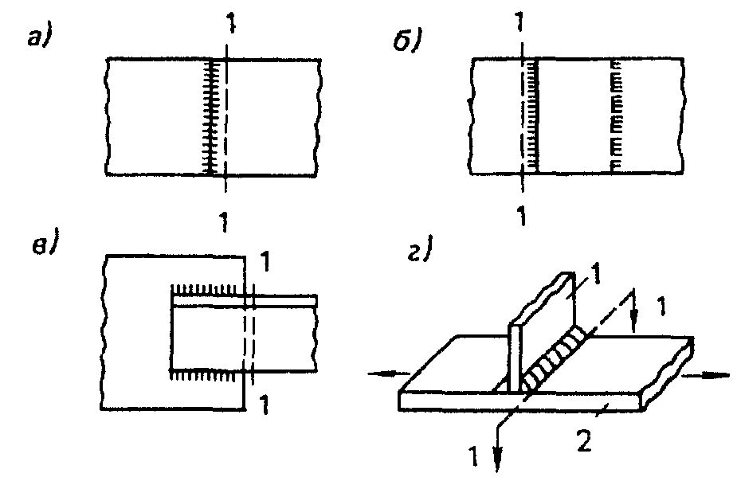
- внахлест лобовыми швами; а
- встык; б в
- внахлест фланговыми швами;
- схема прикрепления поперечного элемента 1 к элементу 2, не имеющему стыка;
1-1 - расчетное сечение
Рисунок 1 - Схемы сварных соединений конструкций г
Таблица 10
| Обозна- | Расчетное сопротивление, Н/мм² , в околошовной зоне алюминия | Расчетное сопротивление, Н/мм² , в околошовной зоне алюминия | Расчетное сопротивление, Н/мм² , в околошовной зоне алюминия | Расчетное сопротивление, Н/мм² , в околошовной зоне алюминия | Расчетное сопротивление, Н/мм² , в околошовной зоне алюминия | Расчетное сопротивление, Н/мм² , в околошовной зоне алюминия | Расчетное сопротивление, Н/мм² , в околошовной зоне алюминия | ||
|---|---|---|---|---|---|---|---|---|---|
| термически не упрочняемого марок | термически не упрочняемого марок | термически не упрочняемого марок | термически упрочняемого марок | термически упрочняемого марок | термически упрочняемого марок | термически упрочняемого марок | |||
| Вид сварного соединения | Напряженное состояние | чение | АД1М | АМцМ | АМг3М; АМг3Н2 | АД31Т; АД31Т4 | АД31Т5 | АД31Т1 | 1915Т |
| при сварке с применением проволоки марок | при сварке с применением проволоки марок | при сварке с применением проволоки марок | при сварке с применением проволоки марок | при сварке с применением проволоки марок | при сварке с применением проволоки марок | при сварке с применением проволоки марок | |||
| СвА5 | СвАМг3 | СвАМг3 | СвАМг3; 1557 | СвАМг3; 1557 | СвАМг3; 1557 | 1557 | |||
| Встык и внахлест лобовыми швами (сечение | Растяжение, сжатие и изгиб | R wz | 25 | 40 | 65 | 55 | 65 | 80 | 160 |
| 1 - 1 на рисунках 1,а и 1,б) | Сдвиг | R wzs | 15 | 25 | 40 | 35 | 40 | 50 | 105 |
| Внахлест фланговыми швами (сечение 1 - 1 на рисунке 1,в) | Растяжение, сжатие и изгиб | R wz | 25 | 40 | 65 | 50 | 60* 75* | 80* 105* | 140* 155* |
Примечания
1 Расчетное сопротивление Rwz алюминия марки 1915Т указано для профилей толщиной 5 - 12 мм. Для профилей толщиной 4 мм при сварке вольфрамовым электродом Rwz = 165 Н/мм² .
- 2 Влияние продольных сварных швов элементов конструкций (в обшивках, кровельных полотнищах и т.п.) на разупрочнение алюминия в околошовной зоне не учитывают.
- 3 Над чертой указаны расчетные сопротивления при сварке алюминия вольфрамовым электродом, под чертой - плавящимся электродом.
Таблица 11
| Сварка | Толщина элементов, мм | Расчетная несущая способность точки на срез, Н |
|---|---|---|
| Аргонодуговая точечная плавящимся электродом (алюминий марок АМг2Н2 | 1,0 + 1,0 | 1950 |
| 1,0 + 2,0 | 2350 | |
| и АМг3Н2; | 1,5 + 1,5 | 2950 |
| сварочная проволока марки СвАМг3 или 1557) | 2,0 + 2,0 | 3350 |
Для алюминия марок АМг2Н2 или АМг3Н2 Rwsm = (0,9 - 0,1 t ) R ( t - толщина более тонкого из свариваемых элементов, мм).
Таблица 12
| Соединение | Напряженное | Обозна- чение | Расчетное сопротивление соединений на болтах R b , Н/мм² , из алюминия марок | Расчетное сопротивление соединений на болтах R b , Н/мм² , из алюминия марок | Расчетное сопротивление соединений на болтах R b , Н/мм² , из алюминия марок | Расчетное сопротивление соединений на болтах R b , Н/мм² , из алюминия марок | Расчетное сопротивление соединений на болтах R b , Н/мм² , из алюминия марок |
|---|---|---|---|---|---|---|---|
| на болтах | состояние | АМг5п | АД33Т1; АВТ1 | Д18Т | В65Т | В94Т1 | |
| Повышенной точности | Растяжение Срез | R bt R bs | 125 90 | 160 95 | 145 95 | 200 130 | 250 150 |
| Нормальной и грубой точности | Растяжение Срез | R bt R bs | 125 80 | 160 85 | 145 85 | 200 115 | 250 135 |
| Соединение на заклепках | Расчетное сопротивление срезу соединений на заклепках R rs , Н/мм² , из алюминия марок | Расчетное сопротивление срезу соединений на заклепках R rs , Н/мм² , из алюминия марок | Расчетное сопротивление срезу соединений на заклепках R rs , Н/мм² , из алюминия марок | Расчетное сопротивление срезу соединений на заклепках R rs , Н/мм² , из алюминия марок | Расчетное сопротивление срезу соединений на заклепках R rs , Н/мм² , из алюминия марок | Расчетное сопротивление срезу соединений на заклепках R rs , Н/мм² , из алюминия марок | Расчетное сопротивление срезу соединений на заклепках R rs , Н/мм² , из алюминия марок |
| Соединение на заклепках | АД1Н | АМцН | АМг2Н | АМг5пМ; АД33Т1; АВТ1; Д18п | Д18Т | В65Т | В94Т1 |
| Соединение на заклепках | 35 | 40 | 70 | 100 | 110 | 145 | 170 |
Примечания
1 Расчетное сопротивление на растяжение болтов с обжимными кольцами следует принимать равным 0,9 Rbs.
2 В продавленные отверстия ставить заклепки не допускается.
3 Расчетные сопротивления соединений на заклепках с потайными или полупотайными головками следует снижать на 20 %. Указанные заклепки растягивающие усилия не воспринимают.
Для соединений на болтах и заклепках расчетные сопротивления растяжению и срезу следует принимать по материалу заклепок или болтов (см. таблицу 12), смятию по материалу соединяемых элементов (см. таблицу 13).
Таблица 13
| Марка алюминия элементов конструкций | Расчетное сопротивление смятию элементов конструкций, Н/мм² , для соединений | Расчетное сопротивление смятию элементов конструкций, Н/мм² , для соединений |
|---|---|---|
| на заклепках R rр | на болтах R bp | |
| АД1М | 40 | 35 |
| АМцМ | 65 | 60 |
| АМцН2; АВТ | 160 | 145 |
| АМг2М; АМг3М; АВМ | 110 | 100 |
| АМг2Н2; АМг3Н2; АД31Т1 | 195 | 175 |
| АД31Т; АД31Т4 | 90 | 80 |
| АД31Т5 | 155 | 140 |
| АД33Т | 140 | 125 |
| АВТ1 | 270 | 255 |
| В95Т1 | 460 | 420 |
| 1915Т | 315 | 285 |
| 1925Т1 | 275 | 245 |
Примечание - Расчетные сопротивления приведены для соединений на болтах, поставленных на расстоянии 2 d от их оси до края элемента. При сокращении этого расстояния до 1,5 d приведенные расчетные сопротивления следует понижать на 40 %.
7Расчет элементов алюминиевых конструкций при центральном растяжении, сжатии и изгибе
7.1Расчет элементов сплошного сечения
c
N
A R
Численные значения коэффициента приведены в таблицах Г.2 и Г.3.
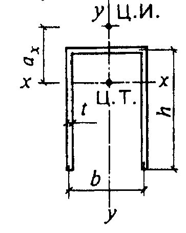
а - открытое; б, в - укрепленные планками или решетками; г - расчетное сечение
Рисунок 2 - П-образные сечения элементов
При отсутствии планок или решеток такие элементы, помимо расчета по формуле (2) в главных плоскостях х -х и у -у , следует проверять на устойчивость при изгибнокрутильной форме потери устойчивости по формуле
где c - коэффициент, вычисляемый по формуле
;
1.
= ax / h -относительное расстояние между центром изгиба и центром тяжести; = I ( ) 2 h I / y -здесь I - cекториальный момент инерции сечения;
It = 0,37 bi t i 3 -момент инерции сечения при свободном кручении, здесь bi и t i -соответственно ширина и толщина листов, образующих сечение, включая стенку.
Для сечения, приведенного на рисунке 2,г, при = b / h :
При наличии утолщений круглого сечения (бульб) момент инерции при кручении It следует увеличить на n π D 4 / 32, где n - число бульб в сечении; D - диаметр бульб.
7.2Расчет элементов сквозного сечения
При наличии в одной из плоскостей сплошного листа вместо планок (см. рисунок 2,б, в) гибкость ветви следует вычислять по радиусу инерции полусечения относительно его центральной оси, перпендикулярной к плоскости планок.
В сквозных стержнях с решетками условная гибкость отдельных ветвей между узлами должна быть не более 2,7 и не должна превышать условную приведенную гибкость ef стержня в целом.
Таблица 14
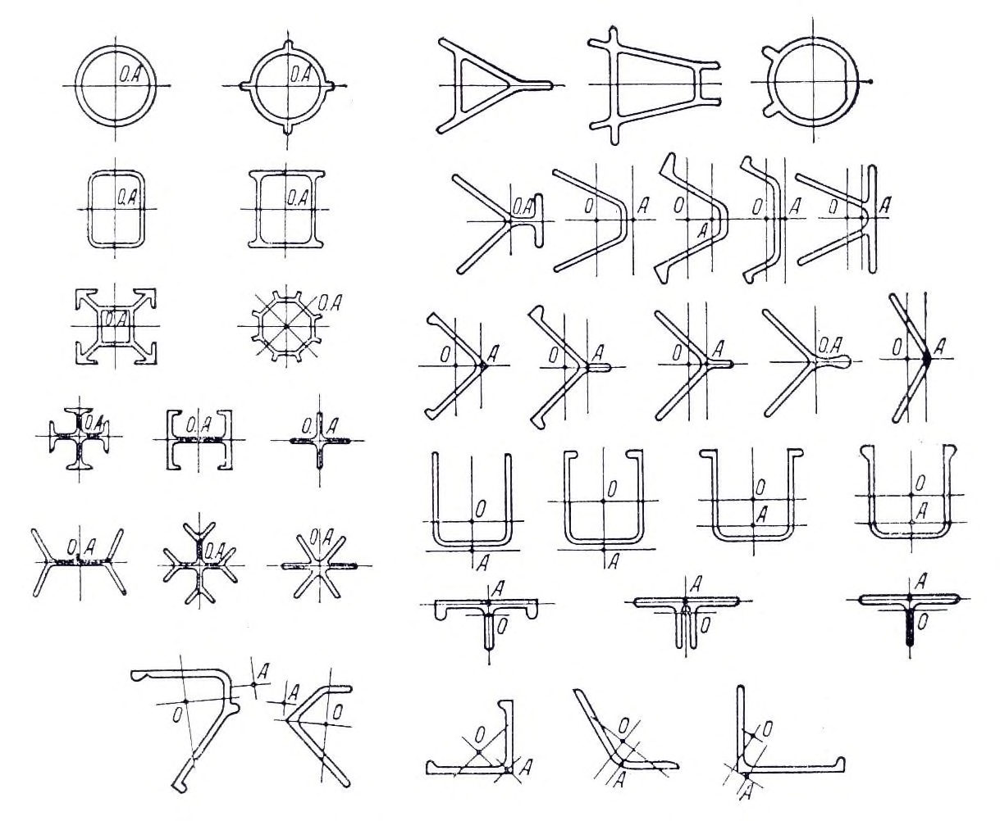
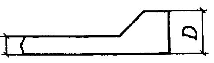
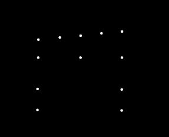
| Тип сечения | Схема сечения | Приведенная гибкость ef стержня сквозного сечения | Приведенная гибкость ef стержня сквозного сечения |
|---|---|---|---|
| с планками | с решетками | ||
| 1 | ( ) 2 1 2 1 82 0 b y ef n , + + = , где b s b l I b I n 1 = x y b | (6) 1 2 d y ef A A + = , где b l b d 2 3 10 = | (9) |
| 2 | ( ) ( ) , n n , b b max ef 2 2 2 2 1 1 2 1 1 082 + + + + = (7) где b s b l I b I n 1 1 1 1 = ; b s b l I b I n 2 2 2 2 = y x 2 b 1 b 2 | A A d d max ef 2 1 2 1 2 + + = где b l b d 2 1 3 1 1 10 = ; b l b d 2 2 3 2 2 10 = ( d 1 и d 2 относятся к сторонам | , A A d 1 (10) |
| 3 | ( ) 2 3 3 2 1 082 b max ef n , + + = , где b s b l I b I n 3 3 = b x 3 y y | (8) 2 67 0 max ef , + = где b l b d 2 3 10 = | 3 d A A , (11) |
Окончание таблицы 14
Обозначения, принятые в таблице 14: у - max - b 1, b 2 , b 3 -b, (b 1 , b 2 ) -d , l b -А -Ad 1 , Ad 2 Ad 3 I b 1 , I b 3 -I b 1 , I b 2 -I s -I s 1 , I s 2 \_ гибкость сквозного стержня в целом в плоскости, перпендикулярной к оси у -у ; наибольшая из гибкостей сквозного стержня в целом в плоскостях, перпендикулярных к осям х -х или у -у ; гибкости отдельных ветвей при изгибе в плоскостях, перпендикулярных к осям соответственно 1-1, 2-2 и 3-3, на участках между сварными швами или крайними болтами, прикрепляющими планки; расстояние между осями ветвей; размеры, определяемые по рисункам 3 и 4; площадь сечения всего стержня; площади сечений раскосов решеток (при крестовой решетке - двух раскосов), расположенных соответственно в плоскостях, перпендикулярных к осям 1-1 и 2-2; площадь сечения раскоса решетки (при крестовой решетке - двух раскосов), лежащей в плоскости одной грани (для трехгранного равностороннего стержня); моменты инерции сечения ветвей относительно осей соответственно 1-1 и 3-3 (для сечений типов 1 и 3 ); то же, двух уголков относительно осей соответственно 1-1 и 2-2 (для сечения типа 2); момент инерции сечения одной планки относительно собственной оси х -х (рисунок 4; для сечений типов 1 и 3);
- момент инерции сечения одной из планок, расположенных в плоскостях, перпендикулярных к осям соответственно 1-1 и 2-2 (для сечения типа 2).
Примечание - К типу 1 также следует относить сечения, у которых вместо швеллеров применены двутавры, трубчатые и другие профили для одной или обеих ветвей; при этом оси у - у и 1-1 должны проходить через центры тяжести соответственно сечения в целом и отдельной ветви, а значения n и b 1 в формуле (6) должны обеспечивать наибольшее значение ef . а - треугольная; б - треугольная с распорками; в - крестовая; г - крестовая с распорками Рисунок 3 - Схемы решеток сквозных стержней
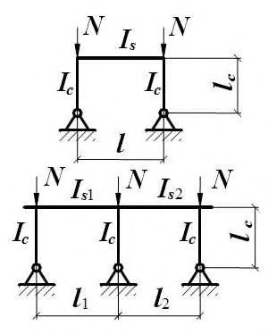
2-2 b
Рисунок 4 - Сквозной стержень с планками
При этом в пределах длины сжатого элемента следует предусматривать не менее двух промежуточных связей (прокладок).
где N -продольное усилие в сквозном стержне;
-коэффициент устойчивости при центральном сжатии, принимаемый при расчете сквозного стержня в плоскости планок или решеток.
Условную поперечную силу Qfic следует распределять: при наличии только соединительных планок (решеток) - поровну между планками (решетками), лежащими в плоскостях, перпендикулярных к оси, относительно которой проводят проверку устойчивости;
1-1 x x s b l при наличии сплошного листа и соединительных планок (решеток) - пополам между листом и планками (решетками), лежащими в плоскостях, параллельных листу; при расчете равносторонних трехгранных сквозных стержней - по 0,8 Qfic для каждой системы соединительных планок (решеток), расположенной в одной грани.
где Qs - условная поперечная сила, приходящаяся на планку одной грани.
где 1 -коэффициент, принимаемый равным: 1,0 для решетки по рисунку 3,а, б и 0,5 - по рисунку 3,в;
Qs -условная поперечная сила, приходящаяся на одну плоскость решетки.
При расчете раскосов крестовой решетки с распорками (рисунок 3,г) следует учитывать дополнительное усилие Nad , возникающее в каждом раскосе от обжатия ветвей и вычисляемое по формуле
2 = d l 2 b / (2 b 3 + d 3 ) -здесь b , lb , d - размеры, указанные на рисунке 3;
Nb -усилие в одной ветви стержня;
Ad , Аb - площадь сечения раскоса и ветви соответственно.
7.3Расчет изгибаемых элементов
при действии в сечении поперечной силы
при действии моментов в двух главных плоскостях (и наличии бимомента)
где х и у -расстояния от главных осей до рассматриваемой точки сечения;
В - бимомент;
I - секториальный момент инерции сечения; ωk секториальная координата.
где х = xn x y / I M -нормальное напряжение в срединной плоскости стенки, параллельное продольной оси балки;
у = yn y x / I M -то же, перпендикулярное к продольной оси балки, в том числе loc , определяемое по формуле (42);
ху = QS / ( Itw ) -касательное напряжение в стенке.
Напряжения х и у , принимаемые в формуле (20) со своими знаками, а также ху следует определять в одной и той же точке стенки балки.
В балках, рассчитываемых по формуле (19), значения напряжений в стенке балки должны быть проверены по формуле (20) в двух главных плоскостях изгиба.
При ослаблении стенки отверстиями для болтов левую часть формулы (18), a также значение ху в формуле (20), следует умножать на коэффициент , вычисляемый по формуле
где s - шаг отверстий в одном ряду; d - диаметр отверстия.
при изгибе в двух главных плоскостях (и наличии бимомента)
В формулах (22) и (23) обозначено:
b - коэффициент устойчивости при изгибе, определяемый по приложению Д; Wcx - момент сопротивления сечения относительно оси х - х , вычисленный для сжатого пояcа;
Wy - момент сопротивления сечения относительно оси у - у , совпадающей с плоскостью изгиба;
Wω - секториальный момент сопротивления сечения.
- а) при передаче нагрузки на балку через сплошной жесткий настил (железобетонные плиты из тяжелого, легкого и ячеистого бетона, плоский , профилированный и волнистый металлический настилы и т.п.), непрерывно опирающийся на сжатый пояс балки и с ним связанный с помощью сварки, болтов, самонарезающих винтов и др; при этом силы трения учитывать не следует;
- б) при значениях условной гибкости сжатого пояса балки b = ( ) / b l ef R / E , не превышающих ее предельных значений ub , определяемых по формулам таблицы 15 для балок симметричного двутаврового сечения или асимметричного - с более развитым сжатым поясом, рассчитываемых по формуле (22), и имеющих отношение ширины растянутого пояса к ширине сжатого пояса не менее 0,75.
Таблица 15
| Место приложения нагрузки | Условная предельная гибкость сжатого пояса сварной или прессованной балки ub | |
|---|---|---|
| К верхнему поясу | 0,45[0,35+0,0032 b / t +(0,76-0,02 b / t ) b / h ] | (24) |
| К нижнему поясу | 0,45[0,57+0,0032 b / t +(0,92-0,02 b / t ) b / h ] | (25) |
| Независимо от уровня приложения нагрузки при расчете участка балки между связями или при чистом изгибе | 0,45[0,41+0,0032 b / t +(0,73-0,016 b / t ) b / h ] | (26) |
| Обозначения, принятые в таблице 15: b и t - соответственно ширина и толщина сжатого пояса; h - расстояние (высота) между осями поясных листов. Примечания 1 Значения ub λ определены при 1 h / b 6 и 15 b / t 35; для балок с отношением b / t 15 в формулах таблицы 15 следует принимать b / t = 15. 2 Для балок с поясными соединениями на заклепках или высокопрочных болтах значения ub | Обозначения, принятые в таблице 15: b и t - соответственно ширина и толщина сжатого пояса; h - расстояние (высота) между осями поясных листов. Примечания 1 Значения ub λ определены при 1 h / b 6 и 15 b / t 35; для балок с отношением b / t 15 в формулах таблицы 15 следует принимать b / t = 15. 2 Для балок с поясными соединениями на заклепках или высокопрочных болтах значения ub | Обозначения, принятые в таблице 15: b и t - соответственно ширина и толщина сжатого пояса; h - расстояние (высота) между осями поясных листов. Примечания 1 Значения ub λ определены при 1 h / b 6 и 15 b / t 35; для балок с отношением b / t 15 в формулах таблицы 15 следует принимать b / t = 15. 2 Для балок с поясными соединениями на заклепках или высокопрочных болтах значения ub |
(25)
При выполнении требований 7.3.5 а) балки, изгибаемые в двух плоскостях, на устойчивость не проверяются.
7.4Расчет элементов, подверженных действию осевой силы с изгибом
(
где х , у - расстояния от главных осей до рассматриваемой точки сечения.
Расчет на устойчивость внецентренно сжатых и сжато-изгибаемых элементов постоянного сечения в плоскости действия момента, совпадающей с плоскостью симметрии, следует выполнять по формуле
В формуле (28) коэффициент устойчивости при сжатии с изгибом e следует определять:
- а) для сплошностенчатых стержней по таблице Е.1 в зависимости от условной гибкости и приведенного относительного эксцентриситета mef , определяемого по формуле
где - коэффициент влияния формы сечения, определяемый по таблице Е.3; m = eA / Wc - относительный эксцентриситет (здесь е = M / N - эксцентриситет, при вычислении которого значения М следует принимать согласно требованиям 7.4.3; Wc - момент сопротивления сечения, вычисленный для наиболее сжатого волокна).
При значениях mef > 10 расчет на устойчивость сплошностенчатых стержней выполнять не требуется. б) для сквозных стержней с решетками или планками, расположенными в плоскостях, параллельных плоскости изгиба, - по таблице Е.2 в зависимости от условной приведенной гибкости, вычисляемой по формуле
и относительного эксцентриситета m , вычисляемого по формуле
где х 1 , у 1 - расстояния соответственно от оси у - у или х - х до оси наиболее сжатой ветви, но не менее расстояния до оси стенки ветви.
В составных сквозных стержнях каждую ветвь необходимо проверять по формуле (27) при соответствующих значениях N, Mx, My, вычисленных для данной ветви.
Таблица 16
| Относительный эксцентриситет m | Момент М при условной гибкости стержня | Момент М при условной гибкости стержня |
|---|---|---|
| max | < 4 | 4 |
| m max 3 | M = M 2 = M max - 0,25 ( M max - M 1 ) | M = M 1 |
| 3 < m max 10 | M = M 2 +( m max - 3)( M max - M 2 ) / 7 | M = M 1 + ( m max - 3)( M max - M 1 ) / 7 |
| Обозначения, принятые в таблице 16: M max - наибольший изгибающий момент в пределах длины стержня; M 1 - наибольший изгибающий момент в пределах средней трети длины стержня, принимаемый равным не менее 0,5 M . | Обозначения, принятые в таблице 16: M max - наибольший изгибающий момент в пределах длины стержня; M 1 - наибольший изгибающий момент в пределах средней трети длины стержня, принимаемый равным не менее 0,5 M . | Обозначения, принятые в таблице 16: M max - наибольший изгибающий момент в пределах длины стержня; M 1 - наибольший изгибающий момент в пределах средней трети длины стержня, принимаемый равным не менее 0,5 M . |
Для сжатых стержней с шарнирно-опертыми концами и сечениями, имеющими две оси симметрии, приведенные относительные эксцентриситеты mef следует определять по таблице Е.4.
где с - коэффициент, вычисляемый по формуле
здесь , - коэффициенты, вычисляемые по таблице 17.
Таблица 17
| Значения коэффициентов | Значения коэффициентов | Значения коэффициентов | ||
|---|---|---|---|---|
| Тип сечен | Схема сечения | при | при | при |
| ия | и эксцентриситет | 1 < m х 5 | y 3,8 | y > 3,8 |
| 1 | 0,75 + 0,05 m x | 1 | y с / | |
| 2 | y y y y x x e e | 0,75 + 0,05 m x | 1 | y с / |
| 3 | y x x | 0,75 + 0,05 m x | 1 | y с / |
| 4 | x x y y y y e e | 1- (0,25-0,05 m x ) I 2 / I 1 | 1 | 1- (1- y с / )(2 I 2 / I 1 -1); = 1 при I 2 / I 1 < 0,5 |
| 5 | Замкнутое или сквозное с решетками или планками | 0,55 + 0,05 m x | 1 | y с / |
| Обозначения, принятые в таблице 17: I 1 и I 2 - моменты инерции соответственно большей и меньшей полок относительно оси симметрии сечения у-у ; с - значение у при y = 3,8. Примечания 1 При значениях b / h < 0,3 следует принимать b / h = 0,3. 2 При значениях m x < 1 или m x > 5 следует принимать соответственно m x = 1 или m x = 5. | Обозначения, принятые в таблице 17: I 1 и I 2 - моменты инерции соответственно большей и меньшей полок относительно оси симметрии сечения у-у ; с - значение у при y = 3,8. Примечания 1 При значениях b / h < 0,3 следует принимать b / h = 0,3. 2 При значениях m x < 1 или m x > 5 следует принимать соответственно m x = 1 или m x = 5. | Обозначения, принятые в таблице 17: I 1 и I 2 - моменты инерции соответственно большей и меньшей полок относительно оси симметрии сечения у-у ; с - значение у при y = 3,8. Примечания 1 При значениях b / h < 0,3 следует принимать b / h = 0,3. 2 При значениях m x < 1 или m x > 5 следует принимать соответственно m x = 1 или m x = 5. | Обозначения, принятые в таблице 17: I 1 и I 2 - моменты инерции соответственно большей и меньшей полок относительно оси симметрии сечения у-у ; с - значение у при y = 3,8. Примечания 1 При значениях b / h < 0,3 следует принимать b / h = 0,3. 2 При значениях m x < 1 или m x > 5 следует принимать соответственно m x = 1 или m x = 5. | Обозначения, принятые в таблице 17: I 1 и I 2 - моменты инерции соответственно большей и меньшей полок относительно оси симметрии сечения у-у ; с - значение у при y = 3,8. Примечания 1 При значениях b / h < 0,3 следует принимать b / h = 0,3. 2 При значениях m x < 1 или m x > 5 следует принимать соответственно m x = 1 или m x = 5. |
Значения коэффициентов и β для сквозных стержней с решетками или планками следует принимать только при наличии не менее двух промежуточных диафрагм по длине стержня. В противном случае следует принимать коэффициенты, установленные для стержней открытого двутаврового сечения.
При определении относительного эксцентриситета mx за расчетный момент Мх следует принимать: для стержней с шарнирно-опертыми концами, закрепленными от смещения перпендикулярно к плоскости действия момента, - максимальный момент в пределах средней трети длины, но не менее половины наибольшего момента по длине стержня; для консолей - момент в заделке, но не менее момента в сечении, отстоящем на треть длины стержня от заделки.
При гибкости y > 3,8 коэффициент с не должен превышать для стержней: замкнутого сечения - единицы; двутаврового сечения - значений, вычисляемых по формуле
- для двутаврового сечения с двумя осями симметрии;
к = 1,25 - для двутаврового сечения с одной осью симметрии; к =1,20 - для таврового сечения; h -расстояние между осями поясов.
где х - коэффициент устойчивости при центральном сжатии, определяемый согласно требованиям 7.1.2.
При х y проверки устойчивости из плоскости действия момента не требуется. 7.4.6 При проверке на устойчивость внецентренно сжатых стержней сквозного сечения с соединительными планками или решетками следует выполнять расчет как стержня в целом, так и отдельных ветвей.
При расчете стержня в целом относительно свободной оси по формуле (28), когда решетка или планки расположены в плоскостях, параллельных плоскости действия момента, коэффициент e следует определять по таблице Е.2 в зависимости от условной приведенной гибкости ef и относительного эксцентриситета m , вычисляемого по формуле
где e = M / N - эксцентриситет, при вычислении которого значения M следует принимать согласно требованиям 7.4.3; а - расстояние от главной оси сечения, перпендикулярной к плоскости действия момента, до оси наиболее сжатой ветви, но не менее расстояния до оси стенки ветви;
I - момент инерции сечения сквозного стержня относительно свободной оси.
При значениях m > 10 расчет на устойчивость стержня в целом не требуется; в этом случае расчет следует выполнять как для изгибаемых элементов.
При расчете отдельных ветвей сквозных стержней с решетками по формуле (2) продольную силу в каждой ветви следует определять с учетом дополнительного усилия Nad от момента. Значение этого усилия следует вычислять по формулам:
Nad = Му / b - при изгибе стержня в плоскости, перпендикулярной к оси у -у , для сечений типов 1 и 3 (см. таблицу 14);
Nad = 0,5 Му / b 1 - то же, для сечений типа 2 (см. таблицу 14);
Nad = 1,16 Мх / b - при изгибе стержня в плоскости, перпендикулярной к оси х -х , для сечений типов 1 и 3 (см. таблицу 14);
Nad = 0,5 Мх / b 2 - то же, для сечений типа 2 (см. таблицу 14).
В данном случае b , b 1, b 2 - расстояния между осями ветвей (см. таблицу 14).
При изгибе стержня сквозного сечения типа 2 (см. таблицу 14) в двух плоскостях усилие Nad следует вычислять по формуле
При расчете отдельных ветвей сквозных стержней с планками в формуле (28) следует учитывать дополнительное усилие Nad от момента М и местный изгиб ветвей от фактической или условной поперечной силы (как в поясах безраскосной фермы).
где eхy = ey ( 4 3 0 4 0 6 с , с , + ).
Здесь следует определять:
ey - согласно требованиям 7.4.2, принимая в формулах вместо m и соответственно my и y ; с - согласно требованиям 7.4.4.
Если mef,y < 2 mx , то кроме расчета по формуле (38), следует провести дополнительную проверку по формулам (28) и (32), принимая еу = 0.
Если x > y , то кроме расчета по формуле (38), следует провести дополнительную проверку по формуле (28), принимая еу = 0.
Значения относительных эксцентриситетов следует вычислять по формулам:
где Wcx и Wcy - моменты сопротивления сечений для наиболее сжатого волокна относительно осей соответственно х -х и у -у .
Если плоскость наибольшей жесткости сечения стержня ( Ix > Iy ) не совпадает с плоскостью симметрии, то расчетное значение m x следует увеличить на 25 %.
Рисунок 5 - Схема стержня сквозного сечения из двух сплошностенчатых ветвей
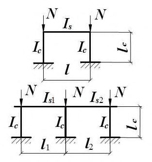
При расчете отдельной ветви по формуле (32) ее гибкость определяют по максимальному расстоянию между узлами решетки.
В случае, когда фактическая поперечная сила больше условной, ветви сквозных внецентренно сжатых элементов следует соединять решетками.
7.5Проверка устойчивости стенок и поясных листов изгибаемых и сжатых элементов
Стенки балок
Cжимающее (краевое) напряжение у расчетной границы стенки, принимаемое со знаком «плюс», и среднее касательное напряжение следует вычислять по формулам:
где М и Q - cредние значения соответственно изгибающего момента и поперечной силы в пределах отсека; если длина отсека а (расстояние между осями поперечных ребер жесткости) больше его расчетной высоты hef , то значения M и Q следует вычислять как средние для более напряженного участка с длиной, равной hef ; если в пределах отсека момент или поперечная сила меняют знак, то их средние значения следует вычислять на участке отсека с одним знаком; h ef - расчетная высота стенки, равная: в балках с поясными соединениями на высокопрочных болтах - расстоянию между ближайшими к оси балки краями поясных уголков; в клепаных балках - расстоянию между ближайшими к оси балки рисками поясных уголков; в сварных балках полной высоте стенки; в прессованных профилях - высоте в свету между полками (рисунок 6); hw - полная высота стенки; tw - толщина стенки.
Местное напряжение loc ( loc,y) в стенке под сосредоточенной нагрузкой следует определять согласно требованиям 7.5.4.
75 (1 - 95 R / E ) R / E - для сварных или прессованных балок;
115 (1 - 123 R / E ) R / E - для балок на болтах и высокопрочных болтах.
Рисунок 6 - Расчетные размеры стенок, свесов полок, поясных листов в прессованных, составных и гнутых профилях и типы прессованных профилей
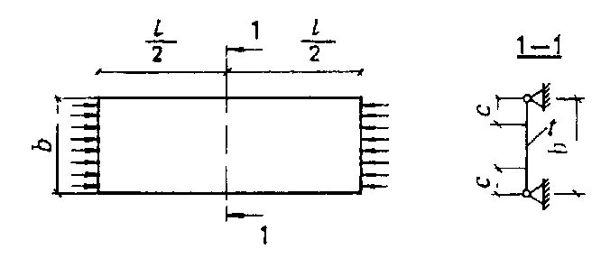
При наличии местных напряжений в стенках балок указанные предельные значения w следует умножать на 0,7.
Стенки балок следует укреплять поперечными ребрами жесткости (см. 7.5.6) при w > 2,5.
где F - расчетное значение сосредоточенной нагрузки (силы); t - толщина стенки;
3 t I c l f ef = - условная длина распределения сосредоточенной нагрузки; с - коэффициент, принимаемый равным 3,25 для сварных балок и 3,75 для балок на высокопрочных болтах;
I f - момент инерции пояса балки относительно собственной оси.
В отсеках, где местная нагрузка приложена к растянутому поясу, одновременно учитывают только два компонента - и или loc и .
Расчет на устойчивость стенок балок симметричного сечения, укрепленных только поперечными ребрами жесткости, при наличии местного напряжения ( loc 0) следует выполнять:
где , loc и -значения, определяемые согласно требованиям 7.5.2;
cr и cr -значения, определяемые по формулам (50) и (51);
loc,cr - критическое напряжение смятия стенки под нагрузкой, определяемое по формуле
здесь с1 - коэффициент, принимаемый по таблице 18, E R t a a = 2 ;
- значения, определяемые согласно требованиям 7.5.5;
Таблица 18
| Отношение ef h a | 0,5 | 0,8 | 1,0 | 1,2 | 1,4 | 1,6 | 1,8 | 2,0 |
|---|---|---|---|---|---|---|---|---|
| Коэффициент с 1 | 11,28 | 14,52 | 17,77 | 21,86 | 26,80 | 32,30 | 38,35 | 45,00 |
| Обозначения, принятые в таблице 18, - см. 7.5.2. | Обозначения, принятые в таблице 18, - см. 7.5.2. | Обозначения, принятые в таблице 18, - см. 7.5.2. | Обозначения, принятые в таблице 18, - см. 7.5.2. | Обозначения, принятые в таблице 18, - см. 7.5.2. | Обозначения, принятые в таблице 18, - см. 7.5.2. | Обозначения, принятые в таблице 18, - см. 7.5.2. | Обозначения, принятые в таблице 18, - см. 7.5.2. | Обозначения, принятые в таблице 18, - см. 7.5.2. |
б) при ef h a > 0,8 - по формуле (43) два раза: при первой проверке cr следует вычислять по формуле w где с2 - коэффициент, принимаемый по таблице 19; при второй проверке cr следует определять по формуле (50) , а loc,cr - по формуле (44) с подстановкой значения a / 2 вместо a .
Таблица 19
| Отношение ef h a | 1,0 | 1,2 | 1,4 | 1,6 | 1,8 | 2,0 | 2,2 | 2,4 | 2,6 |
|---|---|---|---|---|---|---|---|---|---|
| Коэффициент с 2 | 33,70 | 38,77 | 45,26 | 53,16 | 62,18 | 72,20 | 83,75 | 96,16 | 109,56 |
| Обозначения, принятые в таблице 19, - см. 7.5.2. | Обозначения, принятые в таблице 19, - см. 7.5.2. | Обозначения, принятые в таблице 19, - см. 7.5.2. | Обозначения, принятые в таблице 19, - см. 7.5.2. | Обозначения, принятые в таблице 19, - см. 7.5.2. | Обозначения, принятые в таблице 19, - см. 7.5.2. | Обозначения, принятые в таблице 19, - см. 7.5.2. | Обозначения, принятые в таблице 19, - см. 7.5.2. | Обозначения, принятые в таблице 19, - см. 7.5.2. | Обозначения, принятые в таблице 19, - см. 7.5.2. |
В стенке, укрепленной продольным ребром жесткости, расположенным на расстоянии h1 от сжатой кромки отсека, обе пластинки, на которые ребро разделяет отсек, следует проверять отдельно: первую пластинку, расположенную между сжатым поясом и продольным ребром, - по формуле
где
в данном случае h 1 = ( h 1 / t ) R / E ; a = ( а / t ) R / E ;
1 - параметр, равный: a / h 1 при a / h 1 2 и 1 = 2 при a / h 1 2;
cr ,1 - напряжение, определяемое по формуле (51);
- значения, определяемые согласно требованиям 7.5.5; вторую пластинку, расположенную между растянутым поясом и продольным ребром, - по формуле
где cr,2 и cr,2
1,
- напряжения, определяемые соответственно по формулам (57) и (51); loc,2 = 0,4 loc ;
loc,cr ,2 - напряжение, определяемое по формуле (44) и таблице 18, принимая a / ( hef -h 1) вместо a / hef .
Если первая пластинка укреплена дополнительно короткими поперечными ребрами, то их следует доводить до продольного ребра. При этом для проверки первой пластинки необходимо применять формулы (46) и (48), в которых a следует заменять величиной a1 (где a1 -расстояние между осями соседних коротких ребер).
Проверка второй пластинки в этом случае остается без изменений.
где
где
(здесь при R i ≤ 0,7 следует принимать = 1. Значения R i > 1 не допускаются); c - следует принимать по таблице 6;
В формулах (49) - (52):
- отношение бóльшей стороны отсека стенки к мéньшей; d = ( d / tw ) R / E - условная гибкость отсека стенки высотой d ; d
- мéньшая из сторон отсека стенки ( hef или а );
В стенке балки симметричного сечения (при отсутствии местного напряжения), укрепленной кроме поперечных ребер одним продольным ребром, расположенным на расстоянии h1 от расчетной (сжатой) границы отсека, обе пластинки, на которые это ребро разделяет отсек, следует рассчитывать отдельно:
- а) пластинку, расположенную между сжатым поясом и продольным ребром, -по формуле
(здесь 1 = ( h 1 / tw ) R / E - условная гибкость пластинки высотой h1 );
cr,1 - следует определять по формуле (51) с подстановкой размеров проверяемой пластинки;
- следует определять по формуле (52), принимая при этом
c - следует принимать по таблице 6;
- б) пластинку, расположенную между растянутым поясом и продольным ребром, -по формуле
где
cr,2 - следует определять по формуле (51) с подстановкой размеров проверяемой пластинки; c - следует принимать по таблице 6.
30 ef h + 40 мм; толщина ребра t r - не менее br / 12; расстояние между ребрами не должно превышать 2 hef .
Таблица 20
| ef h h 1 | Моменты инерции ребра | Моменты инерции ребра | Моменты инерции ребра | Моменты инерции ребра |
|---|---|---|---|---|
| ef h h 1 | поперечного ( I r ) | продольного ( I rl ) | продольного ( I rl ) | продольного ( I rl ) |
| ef h h 1 | поперечного ( I r ) | требуемое | предельное | предельное |
| ef h h 1 | поперечного ( I r ) | требуемое | минимальное | максимальное |
| 0,20 | 3 h ef t 3 w | (2,5 - 0,5 a / h ef ) a 2 t 3 w / h ef | 1,5 h ef t 3 w | 7 h ef t 3 w |
| 0,25 | 3 h ef t 3 w | (1,5 - 0,4 a / h ef ) a 2 t 3 w / h ef | 1,5 h ef t 3 w | 8,5 h ef t 3 w |
| 0,30 | 3 h ef t 3 w | 1,5 h ef t 3 w | - | - |
| Примечание - При вычислении I rl для промежуточных значений h 1 / h ef применяется линейная интерполяция. | Примечание - При вычислении I rl для промежуточных значений h 1 / h ef применяется линейная интерполяция. | Примечание - При вычислении I rl для промежуточных значений h 1 / h ef применяется линейная интерполяция. | Примечание - При вычислении I rl для промежуточных значений h 1 / h ef применяется линейная интерполяция. | Примечание - При вычислении I rl для промежуточных значений h 1 / h ef применяется линейная интерполяция. |
При расположении продольного и поперечных ребер жесткости с одной стороны стенки моменты инерции сечений каждого из них следует вычислять относительно оси, совпадающей с ближайшей к ребру гранью стенки.
При укреплении стенки балки опорными ребрами жесткости с шириной выступающей части br (не менее 0,5 bfi , bfi -ширина нижнего пояса балки) в расчетное сечение этой стойки следует включать сечение опорных ребер и полосы стенки шириной не более 0,5 tw E / R с каждой стороны ребра.
Толщина опорного ребра жесткости t r должна быть не менее 3 b r R / E , где b r -ширина выступающей части.
Расчетную длину стойки следует принимать равной расчетной высоте стенки балки h ef .
Нижние торцы опорных ребер жесткости должны быть плотно пригнаны или приварены к нижнему поясу балки и рассчитаны на воздействие опорной реакции.
Стенки центрально сжатых, внецентренно сжатых и сжато-изгибаемых элементов
При назначении сечения элемента по предельной гибкости наибольшие значения w следует умножать на коэффициент R ( A N = ), но не более чем в 1,5 раза. При этом значения w следует принимать не более 5,3.
Таблица 21
| Сечение элемента | Наибольшие значения w при значениях условной гибкости стержня | Наибольшие значения w при значениях условной гибкости стержня |
|---|---|---|
| Сечение элемента | ≤ 1 | ≥ 5 |
| Двутавровое | 507 52 + R E | 3,1 |
| Н-образное | 507 46 + E | 3,5 |
| Швеллерное, трубчатое прямоугольное ( h ef - для | R | 3,5 |
| большей стенки) | 507 42 + E | 2,5 |
| R | 3,5 | |
| 2,25 | ||
| Трубчатое квадратное | 37 | 2,25 |
| E | 3,5 | |
| + | 3,5 | |
| R | 3,5 | |
| 507 | 507 | |
| 3,5 | ||
| 3,5 | ||
| 3,5 | ||
| 3,5 | ||
| 3,5 | ||
| 3,5 | ||
| 3,5 | ||
| 3,5 | ||
| 3,5 |
П р и м е ча н и я
1 Приведенные в таблице 21 данные относятся к сварным и прессованным профилям.
- 2 При вычислении w промежуточные значения определяются линейной интерполяцией между значениями при = 1 и = 5.
0,5 < < 1 - линейной интерполяцией между значениями, вычисленными при = 0,5 и = 1.
Продольные ребра жесткости следует включать в расчетные сечения элементов. Если устойчивость стенки не обеспечена, то в расчет следует вводить два крайних участка стенки шириной по 0,6 tw E / R , считая от границ расчетной высоты.
Минимальные размеры выступающей части поперечных ребер жесткости следует принимать согласно требованиям 7.5.6.
Поясные листы и полки центрально сжатых, внецентренно сжатых, сжатоизгибаемых и изгибаемых элементов
При наличии вута, образующего со свесом угол не менее 30 о , расчетную ширину свеса следует измерять до начала вута (в случае выкружки- принимать вписанный вут).
В случае недонапряжения элемента наибольшие значения f из таблицы 22 следует увеличивать в m R раз, но не более чем в 1,5 раза, при этом значения f необходимо принимать не более 1,3 (φ m меньшее из значений φ, φ е , φ еху , сφ , использованное при проверке устойчивости стержня; N = ).
A
Таблица 22
| Характеристика полки (поясного листа) | Наибольшие значения f при значениях условной гибкости стержня | Наибольшие значения f при значениях условной гибкости стержня |
|---|---|---|
| и сечения элемента | ≤ 1 | ≥ 5 |
| Неокаймленная полка двутавра и тавра | 507 14 + R E | 0,8 |
| Неокаймленная бóльшая полка неравнополочного уголка, стенка тавра и полка швеллера | 507 15 + R E | 0,8 |
| Неокаймленная полка равнополочных уголков | 507 14 + R E | 0,7 |
| Примечание - При вычислении f линейной интерполяцией между значениями при | промежуточные значения = 1 и = 5. | определяются |
В случае недонапряжения элемента наибольшую гибкость свеса поясного листа (полки) следует увеличить в R раз, но не более чем в 1,5 раза; здесь - большее из двух значений:
- наибольшее значение условной гибкости свеса при отсутствии утолщения, где f принимаемое по таблице 22; k - коэффициент, определяемый по таблице 23 в зависимости от f , γ 1 и λ ; γ 1 = D / t , где D - размер утолщения, принимаемый равным диаметру круглой бульбы; в квадратных и трапециевидных утолщениях нормального профиля D - высота утолщения при ширине бульбы не менее 1,5 D в трапециевидных (рисунок 7) и не менее D - в прямоугольных утолщениях.
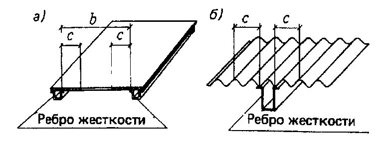
Рисунок 7 - Схема утолщения (бульбы)
| Сечение | f | γ 1 | Значение коэффициента k в формуле (60) при гибкости λ , равной | Значение коэффициента k в формуле (60) при гибкости λ , равной |
|---|---|---|---|---|
| Сечение | 0,35 ≤ f ≤ 0,60 | 2,5 | 1 1,06 | 5 1,35 1,69 |
| 3,0 | 1,24 | |||
| 3,5 | 1,46 | 2,06 | ||
| 0,75 ≤ f ≤ 0,90 | 2,5 | 1,04 | 1,28 | |
| 3,0 | 1,20 | 1,59 | ||
| 3,5 | 1,40 | 1,94 | ||
| 0,35 ≤ f ≤ 0,60 | 2,5 | 1,06 | 1,17 | |
| 3,0 | 1,24 | 1,47 | ||
| 3,5 | 1,46 | 1,67 | ||
| 0,75 ≤ f ≤ 0,90 | 2,5 | 1,04 | 1,13 | |
| 3,0 | 1,20 | 1,35 | ||
| 3,5 | 1,40 | 1,67 |
k для промежуточных значений от 0,6 до 0,75 и
Таблица 23
Примечание - Коэффициент f гибкости от 1 до 5 следует определять линейной интерполяцией.
где 1 - расчетное напряжение в оболочке;
сr ,1 - критическое напряжение, при r / t 300 равное меньшему из значений R или сЕt / r , а при r / t 300 равное сЕt / r (здесь r - радиус срединной поверхности оболочки; t - толщина оболочки).
Значения коэффициентов и с следует определять соответственно по таблицам 24 и 25.
Таблица 24
| Значение R , Н/мм² | Коэффициент при r / t | Коэффициент при r / t | Коэффициент при r / t | Коэффициент при r / t | Коэффициент при r / t | Коэффициент при r / t | Коэффициент при r / t | Коэффициент при r / t | Коэффициент при r / t |
|---|---|---|---|---|---|---|---|---|---|
| Значение R , Н/мм² | 0 | 25 | 50 | 75 | 100 | 125 | 150 | 200 | 250 |
| R ≤ 140 | 1,00 | 0,98 | 0,88 | 0,79 | 0,72 | 0,65 | 0,59 | 0,45 | 0,39 |
| R ≥ 280 | 1,00 | 0,94 | 0,78 | 0,67 | 0,57 | 0,49 | 0,42 | 0,29 | - |
Таблица 25
| Значение r / t | ≤ 50 | 100 | 150 | 200 | 250 | 500 |
|---|---|---|---|---|---|---|
| Коэффициент с | 0,30 | 0,22 | 0,20 | 0,18 | 0,16 | 0,12 |
| Примечание - Для промежуточных значений r / t коэффициенты с следует определять линейной интерполяцией. | Примечание - Для промежуточных значений r / t коэффициенты с следует определять линейной интерполяцией. | Примечание - Для промежуточных значений r / t коэффициенты с следует определять линейной интерполяцией. | Примечание - Для промежуточных значений r / t коэффициенты с следует определять линейной интерполяцией. | Примечание - Для промежуточных значений r / t коэффициенты с следует определять линейной интерполяцией. | Примечание - Для промежуточных значений r / t коэффициенты с следует определять линейной интерполяцией. | Примечание - Для промежуточных значений r / t коэффициенты с следует определять линейной интерполяцией. |
В случае внецентренного сжатия параллельно образующим или чистого изгиба в диаметральной плоскости при касательных напряжениях в месте наибольшего момента, не превышающих значения 0,07 Е ( t / r ) 3/2 , напряжение cr ,1 должно быть увеличено в (1,1 - 0,1 1 / 1 ) раза, 1 - наименьшее напряжение (растягивающие напряжения считать отрицательными).
Кроме этого, устойчивость стенок таких труб должна быть проверена по 7.5.17. Расчет на устойчивость стенок бесшовных труб не требуется, если r / t не превышает значений 1,7 R / E или 35.
8Расчетные длины и предельные гибкости элементов алюминиевых конструкций
8.1Расчетные длины элементов плоских ферм и связей
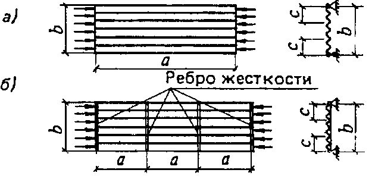
а - треугольная со стойками; б - раскосная; в - треугольная со шпренгелями; г - полураскосная треугольная; д - перекрестная
Рисунок 8 - Схемы для определения расчетных длин сжатых элементов (обозначения - см. таблицу 26) решеток ферм
Таблица 26
| Расчетные длины l ef и l ef ,1 | Расчетные длины l ef и l ef ,1 | Расчетные длины l ef и l ef ,1 | |
|---|---|---|---|
| Направление продольного изгиба элемента фермы | поясов | опорных раскосов и опорных стоек | прочих элементов решетки |
| 1 В плоскости фермы l ef : а) для ферм, кроме указанных в позиции 1,б; | l | l | 0,8 l |
| б) для ферм из одиночных уголков и ферм с прикреплением элементов решетки к поясам впритык | l | l | 0,9 l |
| 2 В направлении, перпендикулярном к плоскости фермы (из плоскости фермы) l ef ,1 : а) для ферм, кроме указанных в позиции 2,б | l 1 | l 1 | l 1 |
| б) для ферм с прикреплением элементов решетки к поясам впритык | l 1 | l 1 | 0,9 l 1 |
| 3 В любом направлении l ef = l ef ,1 для ферм из одиночных уголков при одинаковых расстояниях между точками закрепления элементов в плоскости и из плоскости фермы | 0,85 l | l | 0,85 l |
Обозначения, принятые в таблице 26 (см. рисунок 8): l - геометрическая длина элемента (расстояние между центрами ближайших узлов) в плоскости фермы; l 1 - расстояние между узлами, закрепленными от смещения из плоскости фермы (поясами ферм, специальными связями, жесткими плитами покрытий, прикрепленными к поясу сварными швами или болтами и т.п.).
в плоскости пояса фермы
где α - отношение усилия, соседнего с максимальным, к максимальному усилию в панелях фермы; при этом 1 ≥ α ≥ - 0,55; из плоскости пояса фермы
где β - отношение суммы усилий на всех участках (рассматриваемой длины между точками закрепления пояса из плоскости), кроме максимального, к максимальному усилию; при этом ( к - 1) ≥ β ≥ - 0,5. При вычислении параметра β в формуле (63) растягивающие усилия в стержнях необходимо принимать со знаком «минус».
Расчетные длины l ef и l ef , 1 ветви сквозной колонны постоянного сечения (неразрезного стержня) с различными сжимающими усилиями на участках (число участков равной длины к ≥ 2) с граничными условиями, когда один конец стержня (нижний) жестко закреплен, а другой - шарнирно оперт в плоскости решетки при шарнирном креплении к нему элементов решетки (рисунок 9,б), вычисляются по формулам: в плоскости ветви
где α - отношение усилия, соседнего с максимальным, к максимальному усилию в месте заделки; при этом 1 ≥ α ≥ 0; а - пояс фермы; б - ветвь колонны
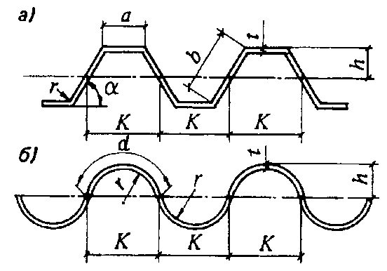
Рисунок 9 - Схемы для определения расчетной длины элементов из плоскости ветви
где β - отношение суммы усилий на всех участках, кроме максимального, к максимальному усилию в месте заделки; при этом ( к -1) ≥ β ≥ 0.
В обоих случаях l - длина участка (см. рисунки 8 и 9); l 1 -расстояние между точками связей из плоскости стержня (см. рисунок 9), и расчет на устойчивость следует выполнять на максимальное усилие.
Таблица 27
| Конструкция узла пересечения элементов решетки | Расчетная длина l ef ,1 из плоскости фермы (связи) при поддерживающем элементе | Расчетная длина l ef ,1 из плоскости фермы (связи) при поддерживающем элементе | Расчетная длина l ef ,1 из плоскости фермы (связи) при поддерживающем элементе |
|---|---|---|---|
| растянутом | неработающем | сжатом | |
| Оба элемента не прерываются | l | 0,7 l 1 | l 1 |
| Поддерживающий элемент прерывается и перекрывается фасонкой: рассматриваемый элемент не прерывается рассматриваемый элемент прерывается и перекрывается фасонкой | 0,7 l 1 | l 1 | 1,4 l 1 |
| 0,7 l 1 | - | - |
Обозначения, принятые в таблице 27 (см. рисунок 8,д): l - расстояние от центра узла фермы (связи) до точки пересечения элементов; l 1 - полная геометрическая длина элемента.
8.2Расчетные длины элементов пространственных решетчатых конструкций
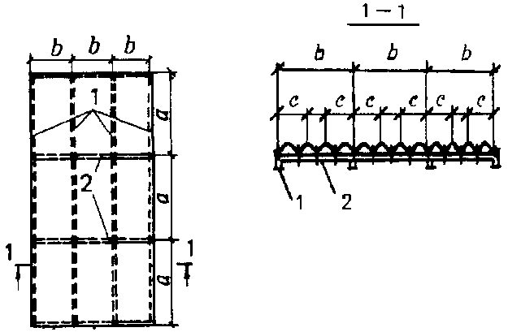
Рисунок 10 -Схемы пространственных решетчатых конструкций
Таблица 28
| Элементы пространственных конструкций | Сжатые и ненагруженные элементы | Сжатые и ненагруженные элементы | Растянутые элементы | Растянутые элементы |
|---|---|---|---|---|
| l ef | i | l ef | i | |
| Пояса по рисунку: | ||||
| 10,а,б,в | l m | i min | l m | i min |
| 10,г,д | 0,73 l m | i min | 0,73 l m | i min |
| 10,е | 0,64 l m | i min | 0,64 l m | i min |
| Раскосы по рисунку: | ||||
| 10,а,д | d l dc | i min | l d ( l d1 ) | i min ( i х ) |
| 10,б,в,г,е | d l d | i min | l d | i min |
| Распорки по рисунку: | ||||
| 10,б,е | 0,80 l c | i min | - | - |
| 10,в | 0,73 l c | i min |
Обозначения, принятые в таблице 28 (см. рисунок 10): ldc - условная длина, принимаемая по таблице 29;
d - коэффициент расчетной длины раскоса, принимаемый по таблице 30.
Примечания
- 1 Раскосы по рисунку 10,а, д в точках пересечения должны быть скреплены между собой.
- 2 Значение l еf для распорок по рисунку 10 приведено для равнополочных уголков.
- 3 В скобках приведены значения l еf и i для раскосов из плоскости грани конструкции.
Таблица 29
| Конструкция узла пересечения элементов решетки | Условная длина раскоса l dc при поддерживающем элементе | Условная длина раскоса l dc при поддерживающем элементе | Условная длина раскоса l dc при поддерживающем элементе |
|---|---|---|---|
| растянутом | неработающем | сжатом | |
| Оба стержня не прерываются Поддерживающий элемент прерывается и перекрывается фасонкой; рассматриваемый элемент не прерывается - в конструкциях по рисунку: | l d | 1,3 l d | 0,8 l d 1 |
| 10,а 10,д Узел пересечения элементов закреплен от смещения из плоскости грани (диафрагмой и т.п.) | 1,3 l d (1,75 - 0,15 n ) l d l d | 1,6 l d (1,9 - 0,1 n ) l d l d | l d1 l d1 l d |
Обозначение, принятое в таблице 29 (см. рисунок 10): n = Im, min ld / ( Id, min lm ), где Im, min и Id, min - наименьшие моменты инерции сечения соответственно пояса и раскоса.
Примечание - При n < 1 и n > 3 в формулах таблицы следует принимать соответственно n = 1 и n = 3.
Таблица 30
| Прикрепление раскоса | Значение | Значение d при l / i min , равном | Значение d при l / i min , равном | Значение d при l / i min , равном |
|---|---|---|---|---|
| к поясам | n | не более 60 | св. 60 до 160 | св. 160 |
| Сварными швами, болтами или заклепками (не менее двух), расположенными вдоль раскоса | До 2 | 1,14 | 0,54+36 i min / l | 0,765 |
| Св. 6 | 1,04 | 0,54+28,8 i min / l | 0,740 | |
| Одним болтом без фасонки | При любых значениях | 1,12 | 0,64+28,8 i min / l | 0,820 |
Обозначения, принятые в таблице 30: n - по таблице 29;
- l - длина, принимаемая равной: l d - для раскосов по рисунку 10,б,в,г,е; ldc по таблице 29 - для раскосов по рисунку 10,а, д.
Примечания
- 1 Значение d при 2 n 6 следует определять линейной интерполяцией.
- 2 При прикреплении одного конца раскоса к поясу без фасонок сваркой или болтами, а второго конца - через фасонку коэффициент расчетной длины раскоса следует принимать равным 0,5(1 + d ); при прикреплении обоих концов раскосов через фасонки - d = 1,0.
8.3Расчетные длины колонн (стоек)
где l - длина колонны, ее отдельного участка или высота этажа.
Коэффициенты расчетной длины колонн (стоек) постоянного сечения следует определять в зависимости от условий закрепления их концов и вида нагрузки. Для некоторых случаев закрепления концов и вида нагрузки значения приведены в таблице 31.
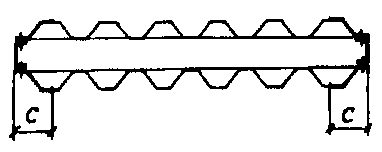
Таблица 31
| Схема закреп- ления колонны (стойки) и вид нагрузки | N | N | N | N | N | N | N max | max N |
|---|---|---|---|---|---|---|---|---|
| | 1,0 | 0,7 | 0,5 | 2,0 | 1,0 | 2,0 | 0,725 | 1,12 |
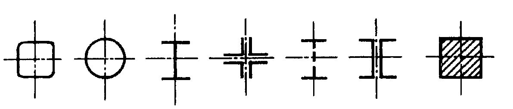
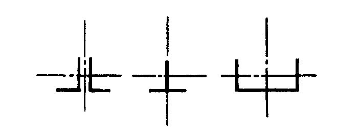
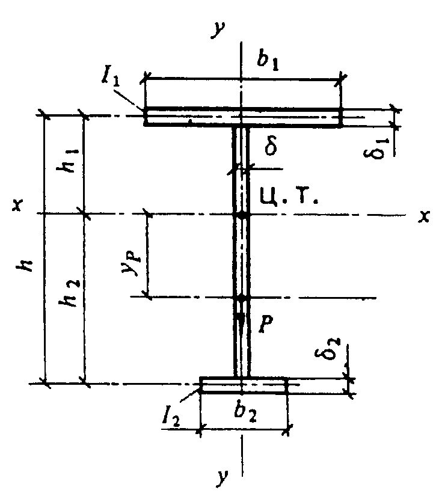
При шарнирном креплении ригелей к колоннам в формуле (68) следует принимать n = 0.
Расчетную длину следует определять на основе расчетной схемы, учитывающей фактические условия закрепления концов колонн.
Таблица 32
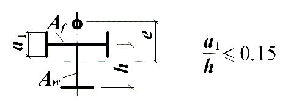
8.4Предельные гибкости элементов
| Элементы конструкций | Предельная гибкость сжатых элементов u |
|---|---|
| 1 Пояса, опорные раскосы и стойки, передающие опорные реакции | 100 |
| 2 Прочие элементы ферм | |
| 3 Колонны второстепенные (стойки фахверка, фонарей и т.п.), элементы | 120 |
| решетки колонн | 120 |
| 4 Элементы связей, а также стержни, служащие для уменьшения расчетной длины сжатых стержней, и другие ненагруженные элементы | 150 |
| 5 Элементы ограждающих конструкций: симметрично нагруженные | 100 |
| несимметрично нагруженные (крайние и угловые стойки витражей и т.д.) | 70 |
Примечание - Приведенные в таблице 33 данные относятся к элементам с сечениями, симметричными относительно действия сил. При сечениях, несимметричных относительно действия сил, предельную гибкость надлежит уменьшать на 30 %.
Таблица 34
| Элементы конструкций | Предельная гибкость растянутых элементов u |
|---|---|
| 1 Пояса и опорные раскосы плоских ферм | 300 |
| 2 Прочие элементы ферм | 300 |
| 3 Связи (кроме элементов, подвергающихся предварительному натяжению) | 300 |
9Расчет элементов конструкций с применением тонколистового алюминия
Тонколистовой алюминий следует применять в качестве элементов ограждающих и несущих конструкций:
- а) мембран;
- б) плоских листов, укрепленных ребрами или специальной штамповкой;
- в) плоских листов и лент, предварительно напряженных как в одном, так и в двух направлениях;
- г) гофрированных листов без укреплений или со специальными укреплениями.
9.1Элементы, работающие на сжатие и изгиб
где t - толщина листа.
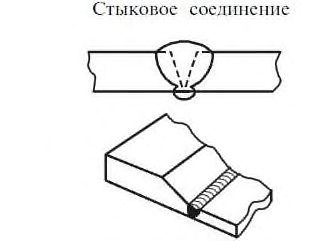
b - полная ширина сечения; с - рабочая ширина сечения
Рисунок 11 -Расчетная схема сжатого тонколистового элемента
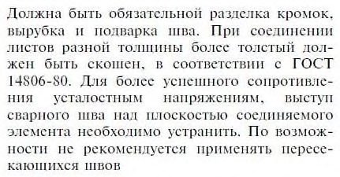
а - плоский лист; б - гофрированный лист
Рисунок 12 - Расчетная схема тонколистовых конструкций, усиленных продольными ребрами
здесь К, d - соответственно шаг и длина по периметру одной полуволны (рисунок 14); Ix1 - момент инерции одной волны;
= 0,3 -коэффициент поперечной деформации;
G - модуль сдвига.
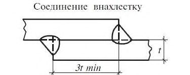
- а - без поперечных ребер жесткости; б - с поперечными ребрами жесткости
Рисунок 13 - Расчетная схема сжатого гофрированного листа а - трапециевидный гофр; б - волнистый гофр
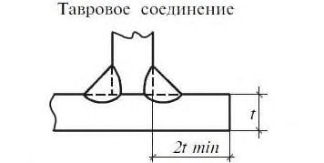
Рисунок 14 - Геометрические параметры для гофра
Когда отношение b a < 3 или гофрированный лист разделяется поперечными ребрами, имеющими момент инерции Is (см. 9.1.4), на ряд ячеек с соотношением сторон b a < 3 (см. рисунок 13, б), значение с следует вычислять по формуле
В формуле (71) обозначения те же, что в формуле (70); значения a и b следует принимать по рисунку 13.
При наличии продольных ребер (рисунок 15) в рабочую площадь следует включать площадь этих ребер и часть листа размером с в каждую сторону от ребра.
1 - продольные ребра; 2 - поперечные ребра Рисунок 15 -Схема плиты из гофрированного листа с продольными и поперечными ребрами
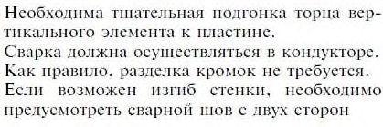
Если гофрированный лист и поперечные ребра имеют различные модули упругости, то
где Es - модуль упругости материала ребра.
Обозначения в формулах (72) и (73) те же, что в формуле (70).
В случае, если значения Is меньше указанных в формулах (72) и (73) величин, то значение с подсчитывается по формуле (70).
При этом значение Dy следует принимать
Для листов с трапециевидным гофром размер сжатых полок, включаемых в расчетное сечение, следует определять по формуле (69). При этом в формулах (17) и (18) Wx и I x следует вычислять для рабочей площади сечения.
где - коэффициент, учитывающий увеличение прогиба вследствие деформации поперечного сечения гофрированного листа под нагрузкой и принимаемый: для волнистых листов и листа с трапециевидным гофром с приклеенным жестким утеплителем (типа пенопласта) равным 1; для трапециевидных по таблице 35; f 0 - прогиб гофрированного листа, работающего как балка, при вычислении которого Ix принимается согласно 9.1.5.
Таблица 35
| Отношение | Значение при угле наклона боковых граней гофра, град | Значение при угле наклона боковых граней гофра, град | Значение при угле наклона боковых граней гофра, град | Значение при угле наклона боковых граней гофра, град |
|---|---|---|---|---|
| b/a | 45 | 60 | 75 | 90 |
| ≥ 2,0 | 1,10 | 1,14 | 1,20 | 1,30 |
| 1,5 | 1,15 | 1,20 | 1,30 | 1,40 |
| 1,0 | 1,20 | 1,25 | 1,35 | 1,45 |
| 0,5 | 1,25 | 1,30 | 1,40 | 1,50 |
Обозначения, принятые в таблице 35: b - размер наклонной грани; a - размер сжатой горизонтальной грани (см. рисунок 14).
Примечание - Значения для промежуточных отношений b/a следует определять линейной интерполяцией.
a - отношение ширины панели к шагу поперечных ребер; x EI - жесткость гофра относительно его нейтральной оси, деленная на длину по периметру, кН · м.
Рисунок 16 -Сечение трехслойной панели
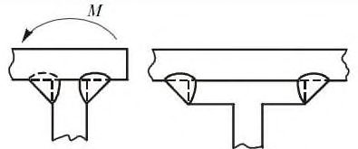
где - сжимающие напряжения в грани от внешней нагрузки; kloc -коэффициент, принимаемый по таблице 36; где b
-коэффициент, принимаемый по таблице 37.
Таблица 36
| Отношение a b | 0,4 | 0,5 | 0,6 | 0,7 | 0,8 | 0,9 | 1,0 | 1,1 | 1,2 | 1,4 |
|---|---|---|---|---|---|---|---|---|---|---|
| Коэффициент k loc | 5,22 | 5,15 | 5,10 | 5,05 | 5,00 | 4,95 | 4,88 | 4,84 | 4,80 | 4,72 |
| Обозначения, принятые в таблице 36: b - размер наклонной грани; a - размер сжатой горизонтальной грани (см. рисунок 14). | Обозначения, принятые в таблице 36: b - размер наклонной грани; a - размер сжатой горизонтальной грани (см. рисунок 14). | Обозначения, принятые в таблице 36: b - размер наклонной грани; a - размер сжатой горизонтальной грани (см. рисунок 14). | Обозначения, принятые в таблице 36: b - размер наклонной грани; a - размер сжатой горизонтальной грани (см. рисунок 14). | Обозначения, принятые в таблице 36: b - размер наклонной грани; a - размер сжатой горизонтальной грани (см. рисунок 14). | Обозначения, принятые в таблице 36: b - размер наклонной грани; a - размер сжатой горизонтальной грани (см. рисунок 14). | Обозначения, принятые в таблице 36: b - размер наклонной грани; a - размер сжатой горизонтальной грани (см. рисунок 14). | Обозначения, принятые в таблице 36: b - размер наклонной грани; a - размер сжатой горизонтальной грани (см. рисунок 14). | Обозначения, принятые в таблице 36: b - размер наклонной грани; a - размер сжатой горизонтальной грани (см. рисунок 14). | Обозначения, принятые в таблице 36: b - размер наклонной грани; a - размер сжатой горизонтальной грани (см. рисунок 14). | Обозначения, принятые в таблице 36: b - размер наклонной грани; a - размер сжатой горизонтальной грани (см. рисунок 14). |
Таблица 37
| Отношение | R | 0,7 | 0,8 | 1,0 | 1,2 | 1,4 | 1,6 | 1,8 | 2,0 | 2,5 | 3,0 |
|---|---|---|---|---|---|---|---|---|---|---|---|
| Коэффициент | | 1,00 | 0,86 | 0,76 | 0,67 | 0,61 | 0,56 | 0,52 | 0,48 | 0,41 | 0,35 |
где b - ширина большей грани.
Местную устойчивость волнистого гофрированного листа при центральном сжатии следует проверять по формуле
где σ 1, σ 2 -нормальные напряжения соответственно у верхней и нижней границ наклонной грани листа, взятые со своими знаками; b -размер наклонной грани, принимаемый по рисунку 14;
Q -поперечная сила в проверяемом сечении волны листа.
Кроме наклонных граней необходимо проверять на устойчивость горизонтальные сжатые грани профилированного листа, при этом местные напряжения σ loc следует определять с учетом ослабления сечения по формуле
где F -опорная реакция, приходящаяся на одну волну листа; b -ширина полки прогона или ригеля; r -радиус сочленения наклонной и горизонтальной граней листа; α -угол наклона грани (см. рисунок 14).
9.2Элементы мембранных конструкций
При контроле процесса натяжения по силовым параметрам и возможности регулирования растягивающих усилий их величину следует назначать с учетом коэффициента условий работы γс = 1. При контроле только по геометрическим параметрам напряжения в обшивке должны удовлетворять условиям:
где σ p, σ F напряжения в листе соответственно от предварительного натяжения и от внешней нагрузки.
10Расчет соединений конструкций из алюминиевых сплавов
10.1Сварные соединения
Таблица 38
| Сварные швы | Напряженное состояние | Расчетная формула |
|---|---|---|
| Стыковые, расположенные перпендикулярно к действующей силе | Сжатие, растяжение | 1 c w w R t l N |
| Угловые | Срез | 1 c wf w f f R l k N |
Обозначения, принятые в таблице 38:
- N - расчетная продольная сила;
- lw - расчетная длина шва, равная его полной длине за вычетом 3 t или 3 kf (при выводе шва за пределы соединения на подкладки за расчетную длину шва следует принимать его полную длину);
- t - наименьшая толщина соединяемых элементов;
- βf - коэффициент, принимаемый равным: 0,9 - при автоматической одно- и двухпроходной сварке; 0,7 - при автоматической многопроходной сварке, при ручной и механизированной сварке с любым числом проходов;
- kf - катет углового шва, принимаемый равным катету вписанного равнобедренного треугольника
Сварные соединения внахлест двумя лобовыми швами (см. рисунок 1,б) имеют расчетное сопротивление, равное расчетному сопротивлению сварного соединения встык (см. рисунок 1,а) при условии, что лобовые швы выполнены с катетом не менее толщины привариваемого элемента и их концы выведены за пределы соединения.
где σ w - напряжение в сварном соединении от изгиба; τw - напряжение в сварном соединении от среза.
An = Awf - расчетная площадь швов; Ixn, Iyn - момент инерции расчетной площади швов соответственно относительно осей х - х и у - у ; R = Rwf - расчетное сопротивление углового шва.
10.2Заклепочные и болтовые соединения
Болтовые или заклепочные соединения, воспринимающие продольные силы, следует рассчитывать на срез болтов или заклепок, смятие основного металла и на растяжение болтов (во фланцевых соединениях) по формулам таблицы 39.
Таблица 39
| Напряженное состояние | Расчетная формула для соединения на болтах | Расчетная формула для соединения на заклепках |
|---|---|---|
| Срез | 1 4 2 bs s R d nn N (88) | 1 4 2 rs s R d nn N (88,а) |
| Смятие соединяемых элементов | 1 t R nd N bp (89) | 1 t R nd N rp (89,а) |
| Растяжение | 1 4 2 0 bt R d n N (90) | - |
| Отрыв головки заклепки | - | 1 rs dhR n N (90,а) |
Обозначения, принятые в таблице 39:
N - расчетная продольная сила, действующая на соединение; n - число болтов или заклепок в соединении; ns - число рабочих срезов одного болта или заклепки;
- d - диаметр заклепки (или отверстия для заклепки) или наружный диаметр стержня болта;
- Σt - наименьшая суммарная толщина элементов, сминаемых в одном направлении;
- dо - внутренний диаметр резьбы болта;
- h = 0,4 d -высота поверхности отрыва головки.
При прикреплении выступающих полок уголков или швеллеров с помощью коротышей количество болтов, прикрепляющих коротыш к этой полке, должно быть увеличено против расчетного числа на 50 %.
10.3Монтажные соединения на высокопрочных стальных болтах
где Rbh -расчетное сопротивление растяжению высокопрочного болта, определяемое по соответствующим нормативным документам; γb -коэффициент условия работы соединения, принимаемый равным 0,8;
Abn - площадь сечения болта нетто, определяемая по соответствующим нормативным документам; μ -коэффициент трения, принимаемый по таблице 40; γh -коэффициент, принимаемый по таблице 42 СП 16.13330.
Таблица 40
| Способ обработки соединяемых поверхностей | Пескоструйная очистка | Травление поверхности | Без обработки (после обезжиривания) |
|---|---|---|---|
| Коэффициент трения μ | 0,45 | 0,4 | 0,15 |
Количество n высокопрочных болтов в соединении при действии продольной силы следует вычислять по формуле
где k1 -количество поверхностей трения соединяемых элементов.
Натяжение высокопрочного болта следует производить осевым усилием
10.4Соединения с фрезерованными торцами
В соединениях с фрезерованными торцами сжимающую силу следует считать полностью передающейся через торцы.
Во внецентренно сжатых и сжато-изгибаемых элементах сварные швы и болты, включая высокопрочные, указанных соединений следует рассчитывать на максимальное растягивающее усилие от действия момента и продольной силы при наиболее неблагоприятном их сочетании, а также на сдвигающее усилие от действия поперечной силы.
10.5Поясные соединения в составных балках
Таблица 41
| Нагрузка | Вид соединения | Формулы для расчета поясных соединений в составных балках |
Окончание таблицы 41
| Неподвижная (распределенная и сосредоточенная) | Угловые швы Высокопрочные болты Заклепки | 1 2 c wf f f R k T (93) 1 1 k Q aT c bh (94) 1 s c rs n Q aT (94,а) |
|---|---|---|
| Местная сосредоточенная | Угловые швы Высокопрочные болты Заклепки | 1 2 1 2 2 + f f c wf k V T R (95) 1 1 2 2 + k Q V T a c bh (96) 1 2 2 + n Q V T a (96,а) |
В формулах (93) - (96,а) приняты следующие обозначения:
- T = QS / I - сдвигающее пояс усилие на единицу длины, вызываемое поперечной силой Q (здесь S - статический момент брутто пояса балки относительно нейтральной оси); a - шаг поясных заклепок или высокопрочных болтов;
Qbh - расчетное усилие одного высокопрочного болта, вычисляемое по формуле (91); k1 - количество поверхностей трения соединяемых элементов;
4 2 d n R Q s rs rs = - расчетное усилие одной заклепки на срез; n s - число расчетных срезов одной заклепки;
V = γ f F / lef - давление от сосредоточенного груза F (здесь γf - коэффициент, принимаемый согласно СП 20.13330); l ef - условная длина распределения сосредоточенной нагрузки, принимаемая по 7.5.4;
- α - коэффициент, принимаемый при нагрузке по верхнему поясу балки, в которой стенка пристрогана к верхнему поясу, α = 0,4; при отсутствии пристрожки стенки или при нагрузке по нижнему поясу α = 1.
11Проектирование алюминиевых конструкций
11.1Общие указания по проектированию
- а) связи, обеспечивающие в процессе монтажа и эксплуатации устойчивость и пространственную неизменяемость сооружения в целом и его элементов, назначая их в зависимости от основных параметров и режима эксплуатации сооружения (конструктивной схемы пролетов, температурных воздействий и т.д.);
- б) возможность укрупнения элементов конструкций на строительной площадке для монтажа их крупными блоками и обеспечения устойчивости отдельных элементов и блоков сооружения в процессе монтажа;
- в) монтажные крепления элементов, обеспечивающие возможность их легкой сборки и удобного выполнения соединений на монтаже (устройство монтажных столиков и т.п.), а также быстроту выверки конструкций;
- г) монтажные соединения элементов болтовыми; сварные монтажные соединения применять лишь в случаях, когда болты нерациональны или не разрешены нормативными документами.
Относительные прогибы элементов алюминиевых конструкций не должны превышать значений, приведенных в СП 20.13330.
Таблица 42
| Наибольшие расстояния, м | Наибольшие расстояния, м | Наибольшие расстояния, м | |
|---|---|---|---|
| между температурными швами | между температурными швами | от температурного шва или торца здания до оси ближайшей | |
| Характеристика зданий и сооружений | по длине блока (вдоль здания) | по ширине блока | вертикальной связи |
| Отапливаемые здания | 144 | 120 | 72 |
| Неотапливаемые | 96 | 90 | 48 |
| Открытые эстакады | 72 | - | 36 |
Примечание - Наибольшие расстояния указаны для зданий и сооружений, в которых конструкции покрытий или (и) стен выполнены из алюминия, а колонны - из стали или алюминия.
11.2Проектирование ограждающих конструкций
При этом в летнее время должно быть учтено воздействие солнечной радиации.
Другие соединения: с использованием профилей специальной формы, в том числе в замок, шпунт, паз и др.; осуществляемые за счет пластических деформаций алюминия, в том числе в фальц, запрессовкой, пистонного типа; защелкиванием (разъемные и неразъемные); осуществляемые за счет упругих деформаций алюминия; болтами с обжимными кольцами (болт-заклепки или «лок-болты»); фрикционные; сшиванием; клеевые, клеесварные и клеезаклепочные и др. следует применять с учетом специфики свойств алюминия и изготовления алюминиевых профилей.
12Конструктивные требования
12.1Общие указания
Для термически не упрочняемых сплавов (особенно в отожженном состоянии) основным способом соединения следует выбирать сварку.
Сварные соединения элементов несущих конструкций следует выполнять в заводских условиях. При проектировании сварных конструкций необходимо предусматривать применение кондукторов.
Толщина элементов ограждающих конструкций при нормальных условиях их эксплуатации должна быть не менее 0,8 мм.
Непосредственное соприкосновение заполнения из стекла с элементами алюминиевого каркаса не допускается.
12.2Сварные соединения
Сварные соединения встык следует предусматривать с обязательной подваркой корня шва или с использованием формирующих подкладок. Концы швов встык следует выводить за пределы стыка (например, с помощью выводных планок).
При сварке встык двух листов разной толщины следует осуществлять переход от толстого листа к тонкому устройством скоса.
Число стыков в расчетных элементах должно быть минимальным.
Рекомендации по конструированию сварных соединений приведены в приложении И.
При сварке стыков кровельных покрытий в монтажных условиях следует применять аргонодуговую сварку вольфрамовым или плавящимся электродом с импульсивным питанием дуги. Основными видами соединений при этом являются нахлесточное и бортовое.
При применении аргонодуговой точечной сварки в монтажных условиях для соединения тонколистовых элементов основным видом соединения является нахлесточное; значение нахлестки должно быть не менее 30 мм.
12.3Заклепочные и болтовые соединения
Таблица 43
| Характеристика расстояния | Расстояния при размещении болтов |
|---|---|
| Между центрами заклепок и болтов в любом направлении: | |
| минимальное для заклепок | 3 d |
| минимальное для болтов | 3,5 d |
| максимальное в крайних рядах при отсутствии | 5 d или 10 t |
| максимальное в средних и крайних рядах при наличии окаймляющих уголков при растяжении | 12 d или 20 t |
| при сжатии | 10 d или 14 t |
| От центра заклепки или болта до края элемента: | |
| минимальное вдоль усилия и по диагонали | 2,5 d |
| минимальное поперек усилия при обрезных кромках | 2,5 d |
| то же, при прокатных или прессованных кромках | 2 d |
| максимальное | 6 d |
Обозначения, принятые в таблице 44: d - диаметр отверстия для болта;
- t - толщина наиболее тонкого наружного элемента пакета.
Соединительные болты, располагаемые вне узлов и стыков, следует размещать на максимальных расстояниях.
13Противопожарные требования
- огнезащитные напыляемые составы, обмазки, облицовки огнестойкими плитными, листовыми и другими материалами;
- нанесение на обогреваемую поверхность конструкции тонкослойных вспучивающихся покрытий (специальных огнезащитных составов с толщиной сухого слоя, не превышающей 3 мм и многократно увеличивающих свою толщину при огневом воздействии);
- комбинации способов защиты.
АПриложение А. Основные буквенные обозначения величин
A -площадь сечения брутто;
Аd -площадь сечения раскосов;
- Аb -площадь сечения ветви;
- Аf -площадь сечения полки (пояса);
- Аn -площадь сечения нетто;
- В -бимомент;
- D -размер утолщения;
- Е -модуль упругости;
- F -сила;
- If -момент инерции пояса балки относительно собственной оси;
Ib -момент инерции сечения ветви;
- Im ; Id -моменты инерции сечения пояса и раскоса фермы;
Is -момент инерции сечения ребра жесткости, планки;
Ir -момент инерции сечения поперечного ребра;
Irl -момент инерции сечения продольного ребра;
It -момент инерции при свободном кручении балки;
Ix ; I y -моменты инерции сечения брутто относительно осей х - х и у - у соответственно;
Ixn ; Iyn -то же, сечения нетто;
I -секториальный момент инерции сечения;
М -момент, изгибающий момент;
Мх ; Му -моменты относительно осей х - х и у - у соответственно;
N -продольная сила;
Nad -дополнительное усилие;
Nb -усилие в одной ветви колонны;
Q -поперечная сила, сила сдвига;
Qfic -условная поперечная сила для соединительных элементов;
Qs -условная поперечная сила, приходящаяся на систему планок, расположенных в одной плоскости;
R -расчетное сопротивление алюминия растяжению, сжатию, изгибу;
Rbр -расчетное сопротивление смятию болтовых соединений;
Rbs -pacчетное сопротивление срезу болтов;
Rbt -расчетное сопротивление растяжению болтов;
Rrs -расчетное сопротивление срезу заклепок;
Rrp -расчетное сопротивление смятию заклепочных соединений;
Rbh -расчетное сопротивление растяжению высокопрочных болтов;
- Rp -расчетное сопротивление алюминия смятию торцевой поверхности (при наличии пригонки);
- Rlp -расчетное сопротивление алюминия смятию при плотном касании;
- Rpl -расчетное сопротивление растяжению алюминия после достижения алюминием предела текучести;
- Rs -расчетное сопротивление алюминия сдвигу;
- Rth -расчетное сопротивление растяжению алюминия в направлении толщины прессованного полуфабриката;
- Run -нормативное сопротивление алюминия разрыву, принимаемое равным минимальному значению временного сопротивления b по национальным cтандартам и техническим условиям на алюминий;
- Ryn -нормативное сопротивление алюминия, принимаемое равным минимальному значению условного предела текучести 0,2 по национальным стандартам и техническим условиям на алюминий;
- Rw - расчетное сопротивление стыковых сварных соединений растяжению, сжатию, изгибу;
- Rws -расчетное сопротивление стыковых сварных соединений сдвигу;
- Rwzs -расчетное сопротивление стыковых и нахлесточных сварных соединений сдвигу;
Rwf - расчетное сопротивление угловых швов срезу по металлу шва;
Rwsm - расчетное сопротивление соединений, выполненных контактной роликовой сваркой;
Rw z расчетное сопротивление алюминия в околошовной зоне;
S -статический момент сдвигаемой части сечения брутто относительно нейтральной оси;
Wy -момент сопротивления сечения для наиболее сжатого волокна;
Wx ; Wy -моменты сопротивления сечения брутто относительно осей х - х и у - у соответственно;
Wxn ; Wyn -моменты сопротивления сечения нетто относительно осей х - х и у - у соответственно;
W n -секториальный момент сопротивления сечения нетто; b -ширина; bef -расчетная ширина свеса полки (поясного листа); br -ширина выступающей части ребра, свеса; d -диаметр отверстия болта; db -наружный диаметр стержня болта; е -эксцентриситет силы; f -прогиб; h -высота; hef -расчетная высота стенки; hw -высота стенки; i -радиус инерции сечения; imin -наименьший радиус инерции сечения; i x ; i y -радиусы инерции сечения относительно осей х - х и у - у соответственно; kf -катет углового шва; l -длина, пролет, расстояние; l c -длина стойки, колонны, распорки; ld -длина раскоса; l ef -расчетная длина; lm -длина панели пояса фермы или колонны; lw -расчетная длина сварного шва; l x ; l y -расчетные длины элемента в плоскостях, перпендикулярных к осям х - х и у - у соответственно; m -относительный эксцентриситет, m = Ea / Wc ; mef -приведенный относительный эксцентриситет, mef = ηm ; r -радиус; t -толщина; t r -толщина ребра; tw -толщина стенки;
f -коэффициент для расчета углового шва по металлу шва;
b -коэффициент условий работы болтового соединения;
с -коэффициент условий работы;
m -коэффициент надежности по материалу;
t -коэффициент влияния изменения температуры;
n -коэффициент надежности по ответственности;
u -коэффициент надежности в расчетах по временному сопротивлению;
-коэффициент влияния формы сечения;
-гибкость, = l ef / i ; λ -условная гибкость, λ = R / E ; λ b - условная гибкость отдельной ветви;
ef -приведенная гибкость стержня сквозного сечения;
- λ ef -условная приведенная гибкость стержня сквозного сечения, λ ef = ef R / E ;
- f λ -условная гибкость свеса пояса, f λ = ( bef / t f ) R / E ;
1 f λ -условная гибкость свесов с утолщением (бульбой); λ w -условная гибкость стенки, λ w = ( hef / tw ) R / E ; uf λ -предельная условная гибкость свеса пояса (поясного листа);
- λ ub - условная гибкость сжатого пояса балки; λ u - предельная гибкость;
- λ х ; λ у -расчетные гибкости элемента в плоскостях, перпендикулярных осям х - х и у - у соответственно;
- 1 -расчетное напряжение в оболочке;
- cr,1 -критическое напряжение в оболочке;
- loc -местное напряжение;
х
;
у
- нормальные напряжения, параллельные осям
- w -напряжение в сварном соединении от изгиба;
- -касательное напряжение;
- w -напряжение в сварном соединении от среза;
- -коэффициент устойчивости при центральном сжатии;
- х(у) -коэффициент устойчивости при сжатии;
- b -коэффициент устойчивости при изгибе;
- е -коэффициент устойчивости при сжатии с изгибом;
- еху -коэффициент устойчивости при сжатии с изгибом в двух плоскостях.
БПриложение Б. и
х - х у - у соответственно;
Физические характеристики алюминия
Таблица Б.1 - Физические характеристики
| Характеристика | Значение |
|---|---|
| Модуль упругости Е , Н/мм² , при температуре, о С: минус 70 от минус 40 до 50 100 | 0,735 . 10 5 0,700 . 10 5 0,640 . 10 5 |
| Модуль сдвига G , Н/мм² , при температуре, о С: минус 70 от минус 40 до 50 100 | 0,274 . 10 5 0,265 . 10 5 0,255 . 10 5 |
| Коэффициент поперечной деформации (Пуассона) | 0,3 |
| Коэффициент линейного расширения , о С -1 , при температуре от минус 70 до 100 о С | 0,23 . 10 -4 |
| Среднее значение плотности , кг/м³ | 2700 |
Таблица В.1 - Плотность алюминия
| Марка алюминия | АМг | АВ | АД1; АД31; АД33 | АМц | 1925; 1915 | В95 | АК8М3ч |
|---|---|---|---|---|---|---|---|
| Плотность, кг/м³ | 2680 | 2700 | 2710 | 2730 | 2770 | 2850 | 2550 |
Коэффициенты устойчивости для расчета центрально сжатых
ГПриложение Г. элементов
В таблице Г.1 приведены схемы сечений, для которых в таблицах Г.2 и Г.3 приведены значения коэффициента .
Таблица Г.1 - Схемы сечений для определения коэффициента
| Тип сечения | Тип сечения | Номер таблицы |
|---|---|---|
| Обозначение | Форма | |
| 1 | Г.2 | |
| 2 | Г.3 |
Таблица Г.2 - Коэффициенты устойчивости центрально сжатых элементов для сечений типа 1
| Гибкость элементов λ | Коэффициенты для элементов из алюминия марок | Коэффициенты для элементов из алюминия марок | Коэффициенты для элементов из алюминия марок | Коэффициенты для элементов из алюминия марок | Коэффициенты для элементов из алюминия марок | Коэффициенты для элементов из алюминия марок | Коэффициенты для элементов из алюминия марок | Коэффициенты для элементов из алюминия марок |
|---|---|---|---|---|---|---|---|---|
| Гибкость элементов λ | АД1М | АМцМ | АД31Т; АД31Т4 | АМг2М | АД31Т5 | АД31Т1; АМг3Н2 | 1925; 1915 | 1915Т |
| 0 | 1,000 | 1,000 | 1,000 | 1,000 | 1,000 | 1,000 | 1,000 | 1,000 |
| 10 | 1,000 | 1,000 | 1,000 | 1,000 | 1,000 | 1,000 | 1,000 | 1,000 |
| 20 | 1,000 | 1,000 | 0,995 | 0,982 | 0,946 | 0,936 | 0,915 | 0,910 |
| 30 | 0,985 | 0,955 | 0,930 | 0,915 | 0,880 | 0,865 | 0,838 | 0,830 |
| 40 | 0,935 | 0,900 | 0,880 | 0,860 | 0,818 | 0,802 | 0,770 | 0,758 |
| 50 | 0,887 | 0,860 | 0,835 | 0,812 | 0,763 | 0,740 | 0,696 | 0,676 |
| 60 | 0,858 | 0,820 | 0,793 | 0,766 | 0,705 | 0,675 | 0,615 | 0,590 |
| 70 | 0,825 | 0,782 | 0,750 | 0,717 | 0,644 | 0,605 | 0,530 | 0,500 |
| 80 | 0,792 | 0,745 | 0,706 | 0,665 | 0,590 | 0,542 | 0,440 | 0,385 |
| 90 | 0,760 | 0,710 | 0,656 | 0,608 | 0,510 | 0,450 | 0,348 | 0,305 |
| 100 | 0,726 | 0,665 | 0,610 | 0,555 | 0,432 | 0,367 | 0,282 | 0,246 |
| 110 | 0,693 | 0,625 | 0,562 | 0,506 | 0,382 | 0,313 | 0,233 | 0,204 |
| 120 | 0,660 | 0,530 | 0,518 | 0,458 | 0,330 | 0,262 | 0,196 | 0,171 |
| 130 | 0,630 | 0,545 | 0,475 | 0,415 | 0,290 | 0,227 | 0,167 | 0,146 |
| 140 | 0,595 | 0,505 | 0,435 | 0,362 | 0,255 | 0,197 | 0,144 | 0,126 |
| 150 | 0,562 | 0,470 | 0,400 | 0,313 | 0,212 | 0,168 | 0,125 | 0,110 |
Таблица Г.3 - Коэффициенты устойчивости центрально сжатых элементов для сечений типа 2
| Гибкость элементов λ | Коэффициенты для элементов из алюминия марок | Коэффициенты для элементов из алюминия марок | Коэффициенты для элементов из алюминия марок | Коэффициенты для элементов из алюминия марок | Коэффициенты для элементов из алюминия марок | Коэффициенты для элементов из алюминия марок | Коэффициенты для элементов из алюминия марок | Коэффициенты для элементов из алюминия марок |
|---|---|---|---|---|---|---|---|---|
| Гибкость элементов λ | АД1М | АМцМ | АД31Т; АД31Т4 | АМг2М | АД31Т5 | АД31Т1; АМг3Н2 | 1925; 1915 | 1915Т |
| 0 | 1,000 | 1,000 | 1,000 | 1,000 | 1,000 | 1,000 | 1,000 | 1,000 |
| 10 | 1,000 | 1,000 | 1,000 | 1,000 | 0,990 | 0,983 | 0,967 | 0,960 |
| 20 | 0,975 | 0,950 | 0,940 | 0,920 | 0,885 | 0,880 | 0,867 | 0,860 |
| 30 | 0,922 | 0,895 | 0,878 | 0,862 | 0,820 | 0,808 | 0,790 | 0,775 |
| 40 | 0,877 | 0,842 | 0,822 | 0,807 | 0,760 | 0,742 | 0,715 | 0,695 |
| 50 | 0,832 | 0,796 | 0,773 | 0,750 | 0,700 | 0,678 | 0,638 | 0,613 |
| 60 | 0,795 | 0,752 | 0,725 | 0,698 | 0,635 | 0,607 | 0,560 | 0,530 |
| 70 | 0,757 | 0,713 | 0,680 | 0,647 | 0,574 | 0,538 | 0,482 | 0,450 |
| 80 | 0,720 | 0,670 | 0,635 | 0,597 | 0,520 | 0,480 | 0,413 | 0,380 |
| 90 | 0,690 | 0,632 | 0,588 | 0,545 | 0,466 | 0,422 | 0,348 | 0,305 |
| 100 | 0,657 | 0,593 | 0,543 | 0,498 | 0,410 | 0,360 | 0,282 | 0,246 |
| 110 | 0,625 | 0,553 | 0,500 | 0,450 | 0,362 | 0,310 | 0,233 | 0,204 |
| 120 | 0,590 | 0,515 | 0,460 | 0,408 | 0,316 | 0,263 | 0,196 | 0,171 |
| 130 | 0,560 | 0,480 | 0,420 | 0,370 | 0,280 | 0,228 | 0,167 | 0,146 |
| 140 | 0,527 | 0,445 | 0,385 | 0,333 | 0,237 | 0,194 | 0,144 | 0,126 |
| 150 | 0,497 | 0,412 | 0,352 | 0,300 | 0,205 | 0,166 | 0,125 | 0,110 |
Коэффициент устойчивости при изгибе
ДПриложение Д. b
Д.1 Коэффициент b для расчета на устойчивость изгибаемых элементов двутаврового, таврового и швеллерного сечения следует определять в зависимости от расстановки связей, раскрепляющих сжатый пояс, вида нагрузки и места ее приложения. При этом предполагается, что нагрузка действует в плоскости наибольшей жесткости ( Ix > I y ), а опорные сечения закреплены от боковых смещений и поворота.
Д.2 Для балки двутаврового сечения с двумя осями симметрии для определения коэффициента b необходимо вычислить коэффициент 1 по формуле
где - коэффициент, вычисляемый согласно требованиям Д.3; l ef расчетная длина балки или консоли, определяемая согласно требованиям 7.3.4 h - полная высота сечения.
Д.3 Значение коэффициента в формуле (Д.1) следует вычислять по формулам таблиц Д.1, Д.2 и Д.3 в зависимости от количества закреплений сжатого пояса, вида нагрузки и места ее приложения, а также от параметра , равного:
- а) для прессованных двутавров
где It = 0,42 bi t i 3 -момент инерции сечения при свободном кручении (здесь bi и t i - соответственно ширина и толщина прямоугольников, образующих сечение).
При наличии утолщений круглого сечения (бульб)
где D - диаметр бульб; n - число бульб в сечении. б) для сварных двутавровых балок при отсутствии отбортовок, утолщений по краям и значительных утолщений в углах параметр следует вычислять по формуле
где для сварных и прессованных двутавровых балок: t f и bf - соответственно толщина и ширина пояса балки; h - расстояние между осями поясов; a = 0,5 h ; для составных клепаных двутавровых балок: t f - суммарная толщина листов пояса и горизонтальной полки поясного уголка; bf - ширина листов пояса; h - расстояние между осями пакетов поясных листов; а - сумма высоты вертикальной полки поясного уголка с толщиной пакета горизонтальных листов;
- t - cуммарная толщина стенки и вертикальных полок поясных уголков.
Значение коэффициента b в формуле (22) следует принимать:
; при 1 0,667 b = 0,5 + 0,25 1 для алюминия всех марок, указанных в таблице 1, за исключением АМг3Н2, АД31Т1 и АД31Т5, и b = 1, но не более 1,0 для алюминия марок АМг3Н2, АД31Т1 и АД31Т5.
Д.4 Для разрезной балки двутаврового сечения с одной осью симметрии (рисунок Д.1) для определения коэффициента b необходимо вычислить коэффициенты 1 и 2 по формулам:
В формулах (Д.4) - (Д.6): ζ - коэффициент, зависящий от вида нагрузки и принимаемый по таблице Д.4; h1, h2 - размеры, указанные на рисунке Д.1; h y y p p = - относительная координата точки приложения нагрузки со своим знаком
(см. рисунок Д.1);
здесь 2 1 1 I I I n + = (где I1 , I2 - моменты инерции соответственно сжатого и растянутого поясов относительно оси симметрии сечения);
I t - момент инерции при кручении [см. обозначения к формуле (Д.2)]. Значение коэффициента b в формуле (22) следует принимать:
указанных в таблице 1, за исключением АМг3Н2, АД31Т1 и АД31Т5, для которых 2 следует вычислять по формуле (Д.5) и принимать не более 1,0.
Таблица Д.1 - Коэффициент для балок двутаврового сечения с двумя осями симметрии
| Коэффициенты | Коэффициенты | Коэффициенты | Коэффициенты | Коэффициенты | |
|---|---|---|---|---|---|
| для балок без закрепления в пролете | для балок без закрепления в пролете | для балок без закрепления в пролете | для балок без закрепления в пролете | при наличии не менее двух промежуточных закреплений верхнего пояса, делящих пролет на равные части, независимо от места | |
| Коэффициент | при сосредоточенной нагрузке, приложенной к поясу | при сосредоточенной нагрузке, приложенной к поясу | при равномерно распределенной нагрузке, приложенной к поясу | при равномерно распределенной нагрузке, приложенной к поясу | |
| верхнему | нижнему | верхнему | нижнему | приложения нагрузки | |
| 1 | 2 | 3 | 4 | 5 | 6 |
| 0,1 | 0,98 | 2,80 | 0,91 | 2,14 | 1,20 |
| 0,4 | 0,98 | 2,84 | 0,91 | 2,14 | 1,23 |
| 1,0 | 1,05 | 2,87 | 0,95 | 2,17 | 1,26 |
| 4,0 | 1,26 | 3,05 | 1,12 | 2,35 | 1,44 |
| 8,0 | 1,47 | 3,29 | 1,30 | 2,56 | 1,65 |
| 16,0 | 1,89 | 3,75 | 1,68 | 2,94 | 1,96 |
| 24,0 | 2,24 | 4,10 | 2,00 | 3,22 | 2,24 |
| 32,0 | 2,56 | 4,45 | 2,28 | 3,50 | 2,49 |
| 48,0 | 3,15 | 4,97 | 2,73 | 3,99 | 2,91 |
| 64,0 | 3,64 | 5,50 | 3,15 | 4,45 | 3,33 |
| 80,0 | 4,10 | 5,95 | 3,50 | 4,80 | 3,64 |
| 96,0 | 4,48 | 6,30 | 3,89 | 5,15 | 3,96 |
| 128,0 | 5,25 | 7,04 | 4,48 | 5,78 | 4,50 |
| 160,0 | 5,92 | 7,77 | 5,04 | 6,30 | 5,01 |
| 240,0 | 7,35 | 9,17 | 6,30 | 7,56 | 6,09 |
| 320,0 | 8,54 | 10,40 | 7,32 | 8,40 | 7,00 |
| 400,0 | 9,63 | 11.48 | 8,16 | 9,38 | 7,77 |
Таблица Д.2 -Коэффициент для балок двутаврового сечения с двумя осями симметрии при одном закреплении балки в середине пролета
| Вид нагрузки | Место приложения нагрузки | Коэффициент |
|---|---|---|
| Сосредоточенная | В середине пролета (независимо от уровня приложения) | = 1,75 1 |
| Сосредоточенная | В четверти пролета к верхнему поясу | = 1,14 1 |
| Равномерно распределенная | К верхнему поясу | = 1,14 1 |
| Сосредоточенная | В четверти пролета к нижнему поясу | = 1,6 1 |
| Равномерно распределенная | К нижнему поясу | = 1,3 1 |
Таблица Д.3 -Коэффициент для консолей двутаврового сечения с двумя осями симметрии
| Коэффициент | Коэффициент при нагрузке, приложенной к поясу | Коэффициент при нагрузке, приложенной к поясу |
|---|---|---|
| | верхнему | нижнему |
| 4 | 0,875 | 3,640 |
| 6 | 1,120 | 3,745 |
| 8 | 1,295 | 3,850 |
| 10 | 1,505 | 3,920 |
| 12 | 1,680 | 4,025 |
| 14 | 1,855 | 4,130 |
| 16 | 2,030 | 4,200 |
| 24 | 2,520 | 4,550 |
| 32 | 2,975 | 4,830 |
| 40 | 3,290 | 5,040 |
| 100 | 5,040 | 6,720 |
Таблица Д.4 -Коэффициент ζ для балок двутаврового сечения с одной осью симметрии
| Вид нагрузки | Чистый изгиб | Равномерно распределенная | Сосредоточенная сила в середине пролета | Момент на одном конце балки |
|---|---|---|---|---|
| Коэффициент ζ | 1,00 | 1,12 | 1,35 | 1,75 |
Рисунок Д.1 -Схема двутаврового сечения с одной осью симметрии
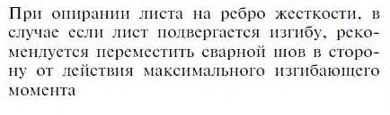
Д.5 Устойчивость балок швеллерного сечения следует проверять так же, как балок двутаврового сечения, при этом вычислять по формуле (Д.2); найденные значения b умножать на 0,7.
Значения Ix , Iy и It в формулах (Д.1) и (Д.2) следует принимать для швеллера.
ЕПриложение Е. Расчет внецентренно сжатых и сжато-изгибаемых элементов
Таблица Е.1 - Коэффициенты устойчивости е для проверки устойчивости внецентренно сжатых (сжато-изгибаемых) сплошностенчатых стержней в плоскости действия момента, совпадающей с плоскостью симметрии
| Условная гибкость | Значение е при приведенном относительном эксцентриситете m ef | Значение е при приведенном относительном эксцентриситете m ef | Значение е при приведенном относительном эксцентриситете m ef | Значение е при приведенном относительном эксцентриситете m ef | Значение е при приведенном относительном эксцентриситете m ef | Значение е при приведенном относительном эксцентриситете m ef | Значение е при приведенном относительном эксцентриситете m ef | Значение е при приведенном относительном эксцентриситете m ef | Значение е при приведенном относительном эксцентриситете m ef | Значение е при приведенном относительном эксцентриситете m ef | Значение е при приведенном относительном эксцентриситете m ef |
|---|---|---|---|---|---|---|---|---|---|---|---|
| Условная гибкость | 0,1 | 0,2 | 0,3 | 0,4 | 0,5 | 0,6 | 0,7 | 0,8 | 1,0 | 1,2 | 1,5 |
| 0,5 | 990 | 980 | 973 | 937 | 905 | 880 | 850 | 920 | 767 | 725 | 657 |
| 1,0 | 947 | 907 | 872 | 837 | 807 | 778 | 752 | 725 | 680 | 637 | 583 |
| 1,5 | 880 | 832 | 793 | 758 | 726 | 700 | 507 | 647 | 607 | 570 | 518 |
| 2,0 | 817 | 765 | 723 | 687 | 656 | 627 | 457 | 580 | 540 | 507 | 463 |
| 2,5 | 750 | 695 | 652 | 617 | 587 | 560 | 410 | 515 | 482 | 452 | 413 |
| 3,0 | 677 | 618 | 578 | 545 | 517 | 495 | 472 | 455 | 425 | 400 | 367 |
| 3,5 | 593 | 542 | 505 | 475 | 453 | 434 | 415 | 398 | 374 | 355 | 325 |
| 4,0 | 505 | 436 | 435 | 412 | 393 | 378 | 362 | 350 | 327 | 312 | 288 |
| 4,5 | 425 | 395 | 374 | 356 | 342 | 328 | 315 | 306 | 288 | 275 | 255 |
| 5,0 | 358 | 338 | 320 | 307 | 295 | 285 | 275 | 268 | 253 | 242 | 227 |
| 5,5 | 303 | 287 | 276 | 265 | 257 | 248 | 242 | 235 | 225 | 215 | 202 |
| 6,0 | 257 | 246 | 238 | 230 | 223 | 218 | 213 | 208 | 198 | 192 | 180 |
| 6,5 | 222 | 212 | 207 | 202 | 197 | 191 | 187 | 183 | 175 | 170 | 161 |
| 7,0 | 192 | 187 | 181 | 177 | 172 | 168 | 165 | 161 | 155 | 150 | 145 |
| 8,0 | 148 | 145 | 142 | 139 | 137 | 134 | 132 | 129 | 126 | 123 | 120 |
| 9,0 | 120 | 117 | 115 | 113 | 111 | 110 | 108 | 107 | 105 | 102 | 100 |
| 10,0 | 097 | 095 | 093 | 092 | 091 | 090 | 088 | 087 | 085 | 084 | 082 |
Окончание таблицы Е.1
| Условная гибкость | Значение е при приведенном относительном эксцентриситете m ef | Значение е при приведенном относительном эксцентриситете m ef | Значение е при приведенном относительном эксцентриситете m ef | Значение е при приведенном относительном эксцентриситете m ef | Значение е при приведенном относительном эксцентриситете m ef | Значение е при приведенном относительном эксцентриситете m ef | Значение е при приведенном относительном эксцентриситете m ef | Значение е при приведенном относительном эксцентриситете m ef | Значение е при приведенном относительном эксцентриситете m ef | Значение е при приведенном относительном эксцентриситете m ef |
|---|---|---|---|---|---|---|---|---|---|---|
| Условная гибкость | 2,0 | 2,5 | 3,0 | 4,0 | 5,0 | 6,0 | 7,0 | 8,0 | 9,0 | 10,0 |
| 0,5 | 567 | 500 | 445 | 360 | 302 | 257 | 225 | 203 | 182 | 165 |
| 1,0 | 505 | 445 | 394 | 323 | 272 | 235 | 205 | 186 | 167 | 151 |
| 1,5 | 452 | 398 | 355 | 292 | 247 | 215 | 188 | 171 | 153 | 140 |
| 2,0 | 405 | 358 | 320 | 265 | 227 | 197 | 175 | 158 | 142 | 130 |
| 2,5 | 362 | 322 | 290 | 242 | 208 | 182 | 162 | 146 | 132 | 121 |
| 3,0 | 323 | 290 | 262 | 220 | 192 | 167 | 150 | 135 | 123 | 114 |
| 3,5 | 288 | 260 | 236 | 202 | 175 | 155 | 140 | 126 | 116 | 108 |
| 4,0 | 257 | 233 | 214 | 184 | 159 | 144 | 130 | 117 | 109 | 101 |
| 4,5 | 230 | 210 | 193 | 167 | 146 | 132 | 121 | 110 | 102 | 095 |
| 5,0 | 205 | 190 | 175 | 152 | 135 | 123 | 113 | 103 | 096 | 090 |
| 5,5 | 185 | 172 | 160 | 140 | 125 | 115 | 105 | 097 | 090 | 085 |
| 6,0 | 166 | 155 | 145 | 128 | 115 | 106 | 097 | 090 | 085 | 080 |
| 6,5 | 148 | 141 | 132 | 117 | 107 | 097 | 090 | 085 | 080 | 075 |
| 7,0 | 135 | 128 | 120 | 108 | 098 | 090 | 085 | 080 | 075 | 070 |
| 8,0 | 112 | 107 | 100 | 091 | 085 | 080 | 077 | 072 | 067 | 062 |
| 9,0 | 094 | 090 | 086 | 080 | 076 | 072 | 067 | 063 | 059 | 055 |
| 10,0 | 080 | 077 | 075 | 070 | 067 | 062 | 060 | 056 | 052 | 048 |
Примечания
1 Значения коэффициентов е в таблице увеличены в 1000 раз.
2 Значения е следует принимать не более значений .
Таблица Е.2 - Коэффициенты устойчивости е для проверки устойчивости внецентренно сжатых (сжато-изгибаемых) сквозных стержней в плоскости действия момента, совпадающей с плоскостью симметрии
| Условная гибкость | Значение е при приведенном относительном эксцентриситете m ef | Значение е при приведенном относительном эксцентриситете m ef | Значение е при приведенном относительном эксцентриситете m ef | Значение е при приведенном относительном эксцентриситете m ef | Значение е при приведенном относительном эксцентриситете m ef | Значение е при приведенном относительном эксцентриситете m ef | Значение е при приведенном относительном эксцентриситете m ef | Значение е при приведенном относительном эксцентриситете m ef | Значение е при приведенном относительном эксцентриситете m ef | Значение е при приведенном относительном эксцентриситете m ef | Значение е при приведенном относительном эксцентриситете m ef |
|---|---|---|---|---|---|---|---|---|---|---|---|
| Условная гибкость | 0,1 | 0,2 | 0,3 | 0,4 | 0,5 | 0,6 | 0,7 | 0,8 | 1,0 | 1,2 | 1,5 |
| 0,5 | 950 | 888 | 825 | 755 | 718 | 660 | 635 | 605 | 540 | 495 | 436 |
| 1,0 | 882 | 810 | 756 | 693 | 660 | 609 | 582 | 548 | 496 | 453 | 405 |
| 1,5 | 872 | 753 | 684 | 643 | 607 | 568 | 534 | 507 | 458 | 420 | 375 |
| 2,0 | 773 | 700 | 640 | 593 | 558 | 523 | 492 | 468 | 423 | 390 | 347 |
| 2,5 | 712 | 637 | 585 | 543 | 508 | 477 | 450 | 427 | 390 | 358 | 320 |
| 3,0 | 640 | 575 | 530 | 488 | 458 | 430 | 408 | 387 | 355 | 327 | 294 |
| 3,5 | 565 | 507 | 467 | 432 | 410 | 385 | 365 | 350 | 321 | 297 | 270 |
| 4,0 | 490 | 442 | 410 | 382 | 363 | 343 | 327 | 313 | 290 | 269 | 247 |
| 4,5 | 418 | 382 | 357 | 335 | 320 | 304 | 290 | 280 | 260 | 243 | 223 |
| 5,0 | 353 | 328 | 309 | 293 | 280 | 268 | 257 | 249 | 233 | 219 | 202 |
| 5,5 | 300 | 282 | 267 | 256 | 245 | 237 | 228 | 222 | 208 | 197 | 183 |
| 6,0 | 256 | 242 | 233 | 223 | 216 | 210 | 202 | 197 | 187 | 178 | 166 |
| 6,5 | 220 | 210 | 205 | 197 | 190 | 185 | 182 | 175 | 167 | 160 | 150 |
| 7,0 | 192 | 186 | 180 | 173 | 169 | 165 | 162 | 157 | 150 | 145 | 136 |
| 8,0 | 150 | 145 | 142 | 139 | 135 | 133 | 130 | 127 | 122 | 120 | 112 |
| 9,0 | 120 | 117 | 115 | 112 | 110 | 108 | 107 | 105 | 101 | 098 | 095 |
| 10,0 | 097 | 096 | 095 | 093 | 092 | 091 | 090 | 087 | 085 | 083 | 082 |
Окончание таблицы Е.2
| Условная гибкость | Значение е при приведенном относительном эксцентриситете m ef | Значение е при приведенном относительном эксцентриситете m ef | Значение е при приведенном относительном эксцентриситете m ef | Значение е при приведенном относительном эксцентриситете m ef | Значение е при приведенном относительном эксцентриситете m ef | Значение е при приведенном относительном эксцентриситете m ef | Значение е при приведенном относительном эксцентриситете m ef | Значение е при приведенном относительном эксцентриситете m ef | Значение е при приведенном относительном эксцентриситете m ef | Значение е при приведенном относительном эксцентриситете m ef |
|---|---|---|---|---|---|---|---|---|---|---|
| Условная гибкость | 2,0 | 2,5 | 3,0 | 4,0 | 5,0 | 6,0 | 7,0 | 8,0 | 9,0 | 10,0 |
| 0,5 | 370 | 320 | 282 | 323 | 196 | 170 | 157 | 143 | 122 | 110 |
| 1,0 | 342 | 296 | 262 | 213 | 182 | 155 | 145 | 130 | 113 | 096 |
| 1,5 | 318 | 275 | 243 | 198 | 170 | 144 | 134 | 120 | 105 | 090 |
| 2,0 | 294 | 257 | 227 | 185 | 159 | 135 | 125 | 112 | 100 | 084 |
| 2,5 | 273 | 240 | 213 | 173 | 150 | 127 | 117 | 105 | 095 | 079 |
| 3,0 | 253 | 222 | 197 | 164 | 142 | 121 | 111 | 100 | 092 | 075 |
| 3,5 | 232 | 206 | 185 | 155 | 133 | 115 | 106 | 095 | 087 | 072 |
| 4,0 | 213 | 190 | 172 | 145 | 125 | 110 | 100 | 090 | 083 | 070 |
| 4,5 | 195 | 177 | 160 | 135 | 117 | 105 | 094 | 086 | 080 | 067 |
| 5,0 | 178 | 162 | 148 | 127 | 110 | 098 | 089 | 082 | 076 | 064 |
| 5,5 | 163 | 150 | 137 | 120 | 105 | 094 | 084 | 077 | 072 | 062 |
| 6,0 | 150 | 138 | 128 | 112 | 098 | 090 | 080 | 073 | 068 | 060 |
| 6,5 | 136 | 127 | 118 | 103 | 094 | 085 | 076 | 070 | 065 | 058 |
| 7,0 | 125 | 117 | 108 | 096 | 090 | 081 | 072 | 067 | 062 | 056 |
| 8,0 | 105 | 100 | 092 | 086 | 082 | 072 | 065 | 060 | 056 | 052 |
| 9,0 | 090 | 087 | 081 | 077 | 072 | 065 | 058 | 055 | 050 | 048 |
| 10,0 | 080 | 076 | 071 | 068 | 064 | 057 | 052 | 048 | 044 | 044 |
Примечания
1 Значения коэффициентов е в таблице увеличены в 1000 раз.
2 Значения е следует принимать не более значений .
Таблица Е.3 -Коэффициенты влияния формы сечения
| Тип сечения | Схема сечения и эксцентриситет | A | Значения при | ||
|---|---|---|---|---|---|
| f | > 5 | > 5 | |||
| w A | 5 0 0,1 m 5 5 < m 20 | 0,1 m 5 | 5 < m 20 | ||
| 1 | e e e | - | 1,0 | ||
| 2 | t h = 0,25 e h | - | 0,85 | ||
| 3 | t | - | 02 0 75 0 , , + | 0,85 | |
| 4 | = 0,25 h t h e t | - | ( ) ( ) m , m , , - - - 5 1 0 0 05 0 135 | 1,1 | |
| 5 | a a h e A f f A w 0,5 A w A f 1 1 a 1 A 0,5 0,5 A w | 0,25 | ( ) ( ) m , m , , - - - 5 1 0 0 05 0 145 | 1,2 | |
| 5 | 0,5 | ( ) ( ) m , m , , - - - 5 02 0 01 175 | 1,25 | ||
| 5 | < 0,15 | 1,0 | ( ) ( ) m , m , , - - - 6 02 0 01 190 02 0 14 , , - | 1,3 | |
| 6 | - | ( ) - - h a m , 1 5 5 3 0 1 | 5 | ||
| 7 | h a e 1 h < 0,15 a 1 | - | - h a , 1 5 8 0 1 | ||
| 8 | A f | 0,25 e | ) 0,01(5 ) 0,05 (0,75 m m - + + | 1,0 | |
| 8 | w 0,5 A | 0,5 | ) 0,02(5 ) 0,1 (0,5 m m - + + | 1,0 |
Окончание таблицы Е.3
| 1 | ) 0,03(5 ) 0,15 (0,25 m m - + + | 1,0 | 1,0 | 1,0 | ||
|---|---|---|---|---|---|---|
| 9 | w A f A 0,5 | 0,5 | ( ) ( ) m m - - - 5 1 0,0 0,05 1,25 | 1,0 | 1,0 | 1,0 |
| 9 | w A f A 0,5 | 1 | ( ) ( ) m m - - - 5 0,02 0,1 1,5 | 1,0 | 1,0 | 1,0 |
| 10 | A w A f f w f A f e 0,5 A A 0,25 0,5 A | 0,5 | 1,4 | 1,4 | 1,4 | 1,4 |
| 10 | A w A f f w f A f e 0,5 A A 0,25 0,5 A | 1,0 | ( ) m - - 5 0,01 1,6 | 1,6 | 1,35+0,05 m | 1,6 |
| 10 | A w A f f w f A f e 0,5 A A 0,25 0,5 A | 2,0 | ( ) m - - 5 0,02 ,8 1 | 1,8 | 1,3+0,1 m | 1,8 |
| 11 | w f f A w e A 0,5 0,5 A A 0,5 | 0,5 | 1,45+0,04 m | 1,65 | 1,45+0,04 m | 1,65 |
| 11 | w f f A w e A 0,5 0,5 A A 0,5 | 1,0 | 1,8+0,12 m | 2,4 | 1,8+0,12 m | 2,4 |
| 11 | w f f A w e A 0,5 0,5 A A 0,5 | 1,5 | 0,1 0,25 2,0 + + m | - | - | - |
| 11 | w f f A w e A 0,5 0,5 A A 0,5 | 2,0 | 0,1 0,25 3,0 + + m | - | - | - |
| Примечания 1 Для типов сечений 5 -7 при подсчете значений A f / A w площадь вертикальных элементов полок не следует учитывать. 2 Для типов сечений 6 -7 значения 5 следует принимать равными значениям для типа 5 при тех же значениях A f / A w . | Примечания 1 Для типов сечений 5 -7 при подсчете значений A f / A w площадь вертикальных элементов полок не следует учитывать. 2 Для типов сечений 6 -7 значения 5 следует принимать равными значениям для типа 5 при тех же значениях A f / A w . | Примечания 1 Для типов сечений 5 -7 при подсчете значений A f / A w площадь вертикальных элементов полок не следует учитывать. 2 Для типов сечений 6 -7 значения 5 следует принимать равными значениям для типа 5 при тех же значениях A f / A w . | Примечания 1 Для типов сечений 5 -7 при подсчете значений A f / A w площадь вертикальных элементов полок не следует учитывать. 2 Для типов сечений 6 -7 значения 5 следует принимать равными значениям для типа 5 при тех же значениях A f / A w . | Примечания 1 Для типов сечений 5 -7 при подсчете значений A f / A w площадь вертикальных элементов полок не следует учитывать. 2 Для типов сечений 6 -7 значения 5 следует принимать равными значениям для типа 5 при тех же значениях A f / A w . | Примечания 1 Для типов сечений 5 -7 при подсчете значений A f / A w площадь вертикальных элементов полок не следует учитывать. 2 Для типов сечений 6 -7 значения 5 следует принимать равными значениям для типа 5 при тех же значениях A f / A w . | Примечания 1 Для типов сечений 5 -7 при подсчете значений A f / A w площадь вертикальных элементов полок не следует учитывать. 2 Для типов сечений 6 -7 значения 5 следует принимать равными значениям для типа 5 при тех же значениях A f / A w . |
Таблица Е.4 - Приведенные относительные эксцентриситеты mef для внецентренно сжатых стержней с шарнирно-опертыми концами
| | Значение m ef при m ef ,1 , равном | Значение m ef при m ef ,1 , равном | Значение m ef при m ef ,1 , равном | Значение m ef при m ef ,1 , равном | Значение m ef при m ef ,1 , равном | Значение m ef при m ef ,1 , равном | Значение m ef при m ef ,1 , равном | Значение m ef при m ef ,1 , равном | Значение m ef при m ef ,1 , равном | Значение m ef при m ef ,1 , равном | Значение m ef при m ef ,1 , равном |
|---|---|---|---|---|---|---|---|---|---|---|---|
| | 0,1 | 0,5 | 1,0 | 1,5 | 2,0 | 3,0 | 4,0 | 5,0 | 7,0 | 10,0 | 20,0 |
| 1 | 0,10 | 0,30 | 0,68 | 1,12 | 1,60 | 2,62 | 3,55 | 4,55 | 6,50 | 9,40 | 19,40 |
| 2 | 0,10 | 0,17 | 0,39 | 0,68 | 1,03 | 1,80 | 2,75 | 3,72 | 5,65 | 8,60 | 18,50 |
| 3 | 0,10 | 0,10 | 0,22 | 0,36 | 0,55 | 1,17 | 1,95 | 2,77 | 4,60 | 7,40 | 17,20 |
| 4 | 0,10 | 0,10 | 0,10 | 0,18 | 0,30 | 0,57 | 1,03 | 1,78 | 3,35 | 5,90 | 15,40 |
| 5 | 0,10 | 0,10 | 0,10 | 0,10 | 0,15 | 0,23 | 0,48 | 0,95 | 2,18 | 4,40 | 13,40 |
| 6 | 0,10 | 0,10 | 0,10 | 0,10 | 0,10 | 0,15 | 0,18 | 0,40 | 1,25 | 3,00 | 11,40 |
| 7 | 0,10 | 0,10 | 0,10 | 0,10 | 0,10 | 0,10 | 0,10 | 0,10 | 0,50 | 1,70 | 9,50 |
| 1 | 0,10 | 0,31 | 0,68 | 1,12 | 1,60 | 2,62 | 3,55 | 4,55 | 6,50 | 9,40 | 19,40 |
| 2 | 0,10 | 0,22 | 0,46 | 0,73 | 1,05 | 1,88 | 2,75 | 3,72 | 5,65 | 8,60 | 18,50 |
| 3 | 0,10 | 0,17 | 0,38 | 0,58 | 0,80 | 1,33 | 2,00 | 2,77 | 4,60 | 7,40 | 17,20 |
| 4 | 0,10 | 0,14 | 0,32 | 0,49 | 0,66 | 1,05 | 1,52 | 2,22 | 3,50 | 5,90 | 15,40 |
| 5 | 0,10 | 0,10 | 0,26 | 0,41 | 0,57 | 0,95 | 1,38 | 1,80 | 2,95 | 4,70 | 13,40 |
| 6 | 0,10 | 0,16 | 0,28 | 0,40 | 0,52 | 0,95 | 1,25 | 1,60 | 2,50 | 4,00 | 11,50 |
| 7 | 0,10 | 0,22 | 0,32 | 0,42 | 0,55 | 0,95 | 1,10 | 1,35 | 2,20 | 3,50 | 10,80 |
| 1 | 0,10 | 0,32 | 0,70 | 1,12 | 1,60 | 2,62 | 2,55 | 4,55 | 6,50 | 9,40 | 19,40 |
| 2 | 0,10 | 0,28 | 0,60 | 0,90 | 1,28 | 1,96 | 2,75 | 3,72 | 5,65 | 8,40 | 18,50 |
| 3 | 0,10 | 0,27 | 0,55 | 0,84 | 1,15 | 1,75 | 2,43 | 3,17 | 4,80 | 7,40 | 17,20 |
| 4 | 0,10 | 0,26 | 0,52 | 0,78 | 1,10 | 1,60 | 2,20 | 2,83 | 4,00 | 6,30 | 15,40 |
| 5 | 0,10 | 0,25 | 0,52 | 0,78 | 1,10 | 1,55 | 2,10 | 2,78 | 3,85 | 5,90 | 14,50 |
| 6 | 0,10 | 0,28 | 0,52 | 0,78 | 1,10 | 1,55 | 2,00 | 2,70 | 3,80 | 5,60 | 13,80 |
| 7 | 0,10 | 0,32 | 0,52 | 0,78 | 1,10 | 1,55 | 1,90 | 2,60 | 3,75 | 5,50 | 13,00 |
| 1 | 0,10 | 0,40 | 0,80 | 1,23 | 1,68 | 2,62 | 3,55 | 4,55 | 6,50 | 9,10 | 19,40 |
| 2 | 0,10 | 0,40 | 0,78 | 1,20 | 1,60 | 2,30 | 3,15 | 4,10 | 5,85 | 8,60 | 18,50 |
| 3 | 0,10 | 0,40 | 0,77 | 1,17 | 1,55 | 2,30 | 3,10 | 3,90 | 5,55 | 8,13 | 18,00 |
| 4 | 0,10 | 0,40 | 0,75 | 1,13 | 1,55 | 2,30 | 3,05 | 3,80 | 5,30 | 7,60 | 17,50 |
| 5 | 0,10 | 0,40 | 0,75 | 1,10 | 1,55 | 2,30 | 3,00 | 3,80 | 5,30 | 7,60 | 17,00 |
| 6 | 0,10 | 0,40 | 0,75 | 1,10 | 1,50 | 2,30 | 3,00 | 3,80 | 5,30 | 7,60 | 16,50 |
| 7 | 0,10 | 0,40 | 0,75 | 1,10 | 1,40 | 2,30 | 3,00 | 3,80 | 5,30 | 7,60 | 16,00 |
Обозначения, принятые в таблице Е.4 :
Таблица Ж.1
| Описание крепления | Назначение продукции | Нормативные документы |
|---|---|---|
| Вытяжная алюминиевая заклепка с сердечником из нержавеющей стали или коррозионно-стойкие заклепки различного диаметра | Для крепления элементов примыкания и элементов конструкций между собой | ГОСТ 10299; ГОСТ 10300; ГОСТ 10301; ГОСТ 10304 |
| Болтовое соединение (в том числе шайба, гайка) | Для крепления элементов к несущей конструкции, а также элементов конструкций между собой | ГОСТ 7798; ГОСТ 5915 |
| Винтовое соединение | Для крепления элементов конструкций между собой | ГОСТ 11738 ГОСТ 10618 |
| Болты самоанкерующиеся распорные для строительства | Для крепления к стене | ГОСТ 28778 |
ЖПриложение Ж. Виды креплений ограждающих конструкций
Таблица И
| №№ пп | Вид сварного соединения | Рекомендации |
|---|---|---|
| 1 | ||
| 2 | ||
| 3 | ||
| 4 | ||
| 5 | ||
| 6 |
ИПриложение И. Конструирование сварных соединений
Окончание таблицы И
| №№ пп | Вид сварного соединения | Рекомендации |
|---|---|---|
| 7 | Рекомендуется применять двойные угловые швы, предусматривающие соединение встык или внахлестку | |
| 8 | ||
| 9 | ||
| 10 | ||
| 11 | ||
| 12 |
Библиография
- [1] Федеральный закон от 22 июля 2008 г. № 123-ФЗ «Технический регламент о требованиях пожарной безопасности»
- [2] Федеральный закон от 30 декабря 2009 г. № 384-ФЗ «Технический регламент о безопасности зданий и сооружений». \_\_\_\_\_\_\_\_\_\_\_\_\_\_\_\_\_\_\_\_\_\_\_\_\_\_\_\_\_\_\_\_\_\_\_\_\_\_\_\_\_\_\_\_\_\_\_\_\_\_\_\_\_\_\_\_\_\_\_\_\_\_